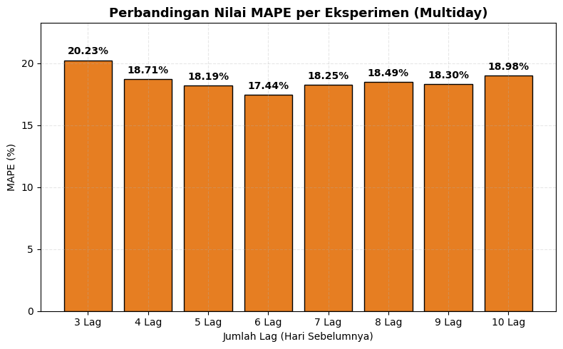
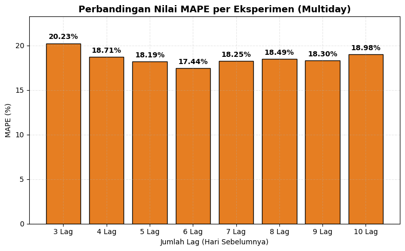

Analisis Prediksi Konsentrasi NO2 Menggunakan KNN Regression#
1. Pengambilan Data (Scraping)#
Data diambil dari sumber Dataspace Coneous yang menyediakan informasi cuaca dan kualitas udara. Scraping dilakukan untuk daerah Surakarta dan mengambil periode 4 bulan penuh, dengan mengambil variabel utama yaitu konsentrasi NO2 per hari.
Data mentah memiliki beberapa kolom, namun untuk keperluan analisis, hanya kolom NO2 dan tanggal (date) yang digunakan.
import openeo
import pandas as pd
import matplotlib.pyplot as plt
# 1. Koneksi ke Copernicus Data Space
connection = openeo.connect("openeo.dataspace.copernicus.eu").authenticate_oidc()
---------------------------------------------------------------------------
ModuleNotFoundError Traceback (most recent call last)
/tmp/ipython-input-329860391.py in <cell line: 0>()
----> 1 import openeo
2 import pandas as pd
3 import matplotlib.pyplot as plt
4
5 # 1. Koneksi ke Copernicus Data Space
ModuleNotFoundError: No module named 'openeo'
---------------------------------------------------------------------------
NOTE: If your import is failing due to a missing package, you can
manually install dependencies using either !pip or !apt.
To view examples of installing some common dependencies, click the
"Open Examples" button below.
---------------------------------------------------------------------------
import os
aoi = {
"type": "Polygon",
"coordinates": [
[
[110.73384843270605, -7.506125504050544],
[110.73384843270605, -7.629910709610229],
[110.93095130302544, -7.629910709610229],
[110.93095130302544, -7.506125504050544],
[110.73384843270605, -7.506125504050544]
]
],
}
s5p = connection.load_collection(
"SENTINEL_5P_L2",
spatial_extent = {
"west": 110.73384843270605,
"south": -7.629910709610229,
"east": 110.93095130302544,
"north": -7.506125504050544
},
temporal_extent=["2025-01-01", "2025-04-01"],
bands=["NO2"],
)
def mask_invalid(x):
return x < 0
s5p_masked = s5p.mask(s5p.apply(mask_invalid))
daily_mean = s5p_masked.aggregate_temporal_period(period="day", reducer="mean")
daily_mean_aoi = daily_mean.aggregate_spatial(geometries=aoi, reducer="mean")
job = daily_mean_aoi.execute_batch(out_format="CSV")
results = job.get_results()
results.download_files("data-copernicus")
for f in os.listdir("data-copernicus"):
if f.endswith(".csv"):
df = pd.read_csv(os.path.join("data-copernicus", f))
print("File ditemukan:", f)
break
df["date"] = pd.to_datetime(df["date"])
df["month"] = df["date"].dt.to_period("M")
df_monthly = df.groupby("month", as_index=False)["NO2"].mean()
df
0:00:00 Job 'j-2511010835094139bae93865a9c70672': send 'start'
0:00:13 Job 'j-2511010835094139bae93865a9c70672': created (progress 0%)
0:00:19 Job 'j-2511010835094139bae93865a9c70672': created (progress 0%)
0:00:25 Job 'j-2511010835094139bae93865a9c70672': created (progress 0%)
0:00:34 Job 'j-2511010835094139bae93865a9c70672': created (progress 0%)
0:00:44 Job 'j-2511010835094139bae93865a9c70672': created (progress 0%)
0:00:56 Job 'j-2511010835094139bae93865a9c70672': created (progress 0%)
0:01:12 Job 'j-2511010835094139bae93865a9c70672': running (progress N/A)
import pandas as pd
# Baca data
df = pd.read_csv('surakarta.csv')
# Ubah kolom 'date' ke tipe datetime
df["date"] = pd.to_datetime(df["date"])
# Urutkan berdasarkan kolom tanggal
df = df.sort_values(by="date")
# Buat kolom periode bulanan (opsional)
df["month"] = df["date"].dt.to_period("M")
# Hitung rata-rata NO2 per bulan (opsional)
df_monthly = df.groupby("month", as_index=False)["NO2"].mean()
# Simpan data yang sudah diurutkan ke file baru (atau overwrite file lama)
df.to_csv('surakarta_sorted.csv', index=False)
print("✅ Data berhasil diurutkan dan disimpan ke 'surakarta_sorted.csv'")
✅ Data berhasil diurutkan dan disimpan ke 'surakarta_sorted.csv'
C:\Users\ARII\AppData\Local\Temp\ipykernel_11700\3531368236.py:13: UserWarning: Converting to PeriodArray/Index representation will drop timezone information.
df["month"] = df["date"].dt.to_period("M")
# Baca data
df = pd.read_csv('surakarta_sorted.csv')
Mengecek dataset
print(df.info())
<class 'pandas.core.frame.DataFrame'>
RangeIndex: 121 entries, 0 to 120
Data columns (total 4 columns):
# Column Non-Null Count Dtype
--- ------ -------------- -----
0 date 121 non-null object
1 feature_index 121 non-null int64
2 NO2 45 non-null float64
3 month 121 non-null object
dtypes: float64(1), int64(1), object(2)
memory usage: 3.9+ KB
None
print(df.head(10))
date feature_index NO2 month
0 2024-12-31 00:00:00+00:00 0 NaN 2024-12
1 2025-01-01 00:00:00+00:00 0 NaN 2025-01
2 2025-01-02 00:00:00+00:00 0 NaN 2025-01
3 2025-01-03 00:00:00+00:00 0 NaN 2025-01
4 2025-01-04 00:00:00+00:00 0 NaN 2025-01
5 2025-01-05 00:00:00+00:00 0 NaN 2025-01
6 2025-01-06 00:00:00+00:00 0 0.000030 2025-01
7 2025-01-07 00:00:00+00:00 0 0.000027 2025-01
8 2025-01-08 00:00:00+00:00 0 NaN 2025-01
9 2025-01-09 00:00:00+00:00 0 0.000040 2025-01
Mengecek Jumlah Missing Value
df.isnull().sum()
date 0
feature_index 0
NO2 76
month 0
dtype: int64
Visualisasi misisng value
import seaborn as sns
import matplotlib.pyplot as plt
m = df.isnull().sum()
p = m / len(df) * 100
plt.figure(figsize=(8,5))
sns.barplot(x=m.index, y=m.values, color='royalblue')
for i, (x, y) in enumerate(zip(m.index, m.values)):
plt.text(i, y + 0.5, f'{int(y)} ({p[i]:.1f}%)', ha='center', fontsize=9)
plt.title('Missing Value per Kolom')
plt.ylabel('Jumlah Missing')
plt.xticks(rotation=45)
plt.tight_layout()
plt.show()
C:\Users\ARII\AppData\Local\Temp\ipykernel_22812\2610598959.py:11: FutureWarning: Series.__getitem__ treating keys as positions is deprecated. In a future version, integer keys will always be treated as labels (consistent with DataFrame behavior). To access a value by position, use `ser.iloc[pos]`
plt.text(i, y + 0.5, f'{int(y)} ({p[i]:.1f}%)', ha='center', fontsize=9)
3. Preprocessing Data NO2#
a. Menangani Missing Values
Pada dataset yang diunduh, ditemukan beberapa nilai hilang (missing values) di kolom NO2. Untuk menjaga kontinuitas data deret waktu (time series), nilai-nilai hilang diisi menggunakan metode interpolasi linear:
Metode ini memperkirakan nilai di antara dua titik data terdekat, menjaga kestabilan pola data.
print(df['NO2'].isna().sum())
76
df['NO2'] = df['NO2'].interpolate(method='linear')
print(df['NO2'].isna().sum())
df[df['NO2'].isna()]
6
| date | feature_index | NO2 | month | |
|---|---|---|---|---|
| 0 | 2024-12-31 00:00:00+00:00 | 0 | NaN | 2024-12 |
| 1 | 2025-01-01 00:00:00+00:00 | 0 | NaN | 2025-01 |
| 2 | 2025-01-02 00:00:00+00:00 | 0 | NaN | 2025-01 |
| 3 | 2025-01-03 00:00:00+00:00 | 0 | NaN | 2025-01 |
| 4 | 2025-01-04 00:00:00+00:00 | 0 | NaN | 2025-01 |
| 5 | 2025-01-05 00:00:00+00:00 | 0 | NaN | 2025-01 |
df['NO2'] = df['NO2'].interpolate(method='linear').bfill()
print(df['NO2'].isna().sum())
0
df.head()
| date | feature_index | NO2 | month | |
|---|---|---|---|---|
| 0 | 2024-12-31 00:00:00+00:00 | 0 | 0.00003 | 2024-12 |
| 1 | 2025-01-01 00:00:00+00:00 | 0 | 0.00003 | 2025-01 |
| 2 | 2025-01-02 00:00:00+00:00 | 0 | 0.00003 | 2025-01 |
| 3 | 2025-01-03 00:00:00+00:00 | 0 | 0.00003 | 2025-01 |
| 4 | 2025-01-04 00:00:00+00:00 | 0 | 0.00003 | 2025-01 |
📈 Analisis Autokorelasi#
from statsmodels.graphics.tsaplots import plot_acf
plot_acf(df["NO2"], lags=30)
plt.title("Autocorrelation Function (ACF) - NO2")
plt.show()
4. Pembentukan Data Supervised#
Karena data NO2 bersifat deret waktu, maka dibentuk data supervised untuk memprediksi nilai ke depan berdasarkan beberapa nilai sebelumnya.
Tiga eksperimen dilakukan dengan variasi jumlah lag:
Eksperimen 1: Menggunakan 3 lag (NO2-t3, NO2-t2, NO2-t1, NO2)
Eksperimen 2: Menggunakan 4 lag (NO2-t4, NO2-t3, NO2-t2, NO2-t1, NO2)
Eksperimen 3: Menggunakan 5 lag (NO2-t5, NO2-t4, NO2-t3, NO2-t2, NO2-t1, NO2)
Tujuannya adalah untuk melihat pengaruh jumlah lag terhadap performa model.
Prediksi NO₂ MultiDays#
import pandas as pd
def make_supervised_multiday(df, target_col='NO2', n_lags=10, n_steps=3):
df_supervised = df.copy()
for i in range(1, n_lags + 1):
df_supervised[f'{target_col}_t-{i}'] = df_supervised[target_col].shift(i)
for j in range(1, n_steps + 1):
df_supervised[f'{target_col}_t+{j}'] = df_supervised[target_col].shift(-j)
lag_cols = [f'{target_col}_t-{i}' for i in range(n_lags, 0, -1)]
target_cols = [f'{target_col}_t+{j}' for j in range(1, n_steps + 1)]
df_supervised = df_supervised[lag_cols + target_cols]
df_supervised = df_supervised.dropna().reset_index(drop=True)
return df_supervised
df = df[['NO2']].copy().reset_index(drop=True)
# Ubah `n_steps` sesuai kebutuhan, misal prediksi 3 hari ke depan
n_steps = 3
# Eksperimen 1: 3 lag
df_exp1 = make_supervised_multiday(df, n_lags=3, n_steps=n_steps)
print("Eksperimen 1 (3 lag):")
print(df_exp1.head(), "\n")
# Eksperimen 2: 4 lag
df_exp2 = make_supervised_multiday(df, n_lags=4, n_steps=n_steps)
print("Eksperimen 2 (4 lag):")
print(df_exp2.head(), "\n")
# Eksperimen 3: 5 lag
df_exp3 = make_supervised_multiday(df, n_lags=5, n_steps=n_steps)
print("Eksperimen 3 (5 lag):")
print(df_exp3.head(), "\n")
# Eksperimen 4: 6 lag
df_exp4 = make_supervised_multiday(df, n_lags=6, n_steps=n_steps)
print("Eksperimen 4 (6 lag):")
print(df_exp4.head(), "\n")
# Eksperimen 5: 7 lag
df_exp5 = make_supervised_multiday(df, n_lags=7, n_steps=n_steps)
print("Eksperimen 5 (7 lag):")
print(df_exp5.head(), "\n")
# Eksperimen 6: 8 lag
df_exp6 = make_supervised_multiday(df, n_lags=8, n_steps=n_steps)
print("Eksperimen 6 (8 lag):")
print(df_exp6.head(), "\n")
# Eksperimen 7: 9 lag
df_exp7 = make_supervised_multiday(df, n_lags=9, n_steps=n_steps)
print("Eksperimen 7 (9 lag):")
print(df_exp7.head(), "\n")
# Eksperimen 8: 10 lag
df_exp8 = make_supervised_multiday(df, n_lags=10, n_steps=n_steps)
print("Eksperimen 8 (10 lag):")
print(df_exp8.head(), "\n")
Eksperimen 1 (3 lag):
NO2_t-3 NO2_t-2 NO2_t-1 NO2_t+1 NO2_t+2 NO2_t+3
0 0.00003 0.00003 0.00003 0.000030 0.000030 0.000030
1 0.00003 0.00003 0.00003 0.000030 0.000030 0.000027
2 0.00003 0.00003 0.00003 0.000030 0.000027 0.000033
3 0.00003 0.00003 0.00003 0.000027 0.000033 0.000040
4 0.00003 0.00003 0.00003 0.000033 0.000040 0.000036
Eksperimen 2 (4 lag):
NO2_t-4 NO2_t-3 NO2_t-2 NO2_t-1 NO2_t+1 NO2_t+2 NO2_t+3
0 0.00003 0.00003 0.00003 0.000030 0.000030 0.000030 0.000027
1 0.00003 0.00003 0.00003 0.000030 0.000030 0.000027 0.000033
2 0.00003 0.00003 0.00003 0.000030 0.000027 0.000033 0.000040
3 0.00003 0.00003 0.00003 0.000030 0.000033 0.000040 0.000036
4 0.00003 0.00003 0.00003 0.000027 0.000040 0.000036 0.000020
Eksperimen 3 (5 lag):
NO2_t-5 NO2_t-4 NO2_t-3 NO2_t-2 NO2_t-1 NO2_t+1 NO2_t+2 NO2_t+3
0 0.00003 0.00003 0.00003 0.000030 0.000030 0.000030 0.000027 0.000033
1 0.00003 0.00003 0.00003 0.000030 0.000030 0.000027 0.000033 0.000040
2 0.00003 0.00003 0.00003 0.000030 0.000030 0.000033 0.000040 0.000036
3 0.00003 0.00003 0.00003 0.000030 0.000027 0.000040 0.000036 0.000020
4 0.00003 0.00003 0.00003 0.000027 0.000033 0.000036 0.000020 0.000022
Eksperimen 4 (6 lag):
NO2_t-6 NO2_t-5 NO2_t-4 NO2_t-3 NO2_t-2 NO2_t-1 NO2_t+1 \
0 0.00003 0.00003 0.00003 0.000030 0.000030 0.000030 0.000027
1 0.00003 0.00003 0.00003 0.000030 0.000030 0.000030 0.000033
2 0.00003 0.00003 0.00003 0.000030 0.000030 0.000027 0.000040
3 0.00003 0.00003 0.00003 0.000030 0.000027 0.000033 0.000036
4 0.00003 0.00003 0.00003 0.000027 0.000033 0.000040 0.000020
NO2_t+2 NO2_t+3
0 0.000033 0.000040
1 0.000040 0.000036
2 0.000036 0.000020
3 0.000020 0.000022
4 0.000022 0.000023
Eksperimen 5 (7 lag):
NO2_t-7 NO2_t-6 NO2_t-5 NO2_t-4 NO2_t-3 NO2_t-2 NO2_t-1 \
0 0.00003 0.00003 0.00003 0.000030 0.000030 0.000030 0.000030
1 0.00003 0.00003 0.00003 0.000030 0.000030 0.000030 0.000027
2 0.00003 0.00003 0.00003 0.000030 0.000030 0.000027 0.000033
3 0.00003 0.00003 0.00003 0.000030 0.000027 0.000033 0.000040
4 0.00003 0.00003 0.00003 0.000027 0.000033 0.000040 0.000036
NO2_t+1 NO2_t+2 NO2_t+3
0 0.000033 0.000040 0.000036
1 0.000040 0.000036 0.000020
2 0.000036 0.000020 0.000022
3 0.000020 0.000022 0.000023
4 0.000022 0.000023 0.000025
Eksperimen 6 (8 lag):
NO2_t-8 NO2_t-7 NO2_t-6 NO2_t-5 NO2_t-4 NO2_t-3 NO2_t-2 \
0 0.00003 0.00003 0.00003 0.000030 0.000030 0.000030 0.000030
1 0.00003 0.00003 0.00003 0.000030 0.000030 0.000030 0.000027
2 0.00003 0.00003 0.00003 0.000030 0.000030 0.000027 0.000033
3 0.00003 0.00003 0.00003 0.000030 0.000027 0.000033 0.000040
4 0.00003 0.00003 0.00003 0.000027 0.000033 0.000040 0.000036
NO2_t-1 NO2_t+1 NO2_t+2 NO2_t+3
0 0.000027 0.000040 0.000036 0.000020
1 0.000033 0.000036 0.000020 0.000022
2 0.000040 0.000020 0.000022 0.000023
3 0.000036 0.000022 0.000023 0.000025
4 0.000020 0.000023 0.000025 0.000027
Eksperimen 7 (9 lag):
NO2_t-9 NO2_t-8 NO2_t-7 NO2_t-6 NO2_t-5 NO2_t-4 NO2_t-3 \
0 0.00003 0.00003 0.00003 0.000030 0.000030 0.000030 0.000030
1 0.00003 0.00003 0.00003 0.000030 0.000030 0.000030 0.000027
2 0.00003 0.00003 0.00003 0.000030 0.000030 0.000027 0.000033
3 0.00003 0.00003 0.00003 0.000030 0.000027 0.000033 0.000040
4 0.00003 0.00003 0.00003 0.000027 0.000033 0.000040 0.000036
NO2_t-2 NO2_t-1 NO2_t+1 NO2_t+2 NO2_t+3
0 0.000027 0.000033 0.000036 0.000020 0.000022
1 0.000033 0.000040 0.000020 0.000022 0.000023
2 0.000040 0.000036 0.000022 0.000023 0.000025
3 0.000036 0.000020 0.000023 0.000025 0.000027
4 0.000020 0.000022 0.000025 0.000027 0.000028
Eksperimen 8 (10 lag):
NO2_t-10 NO2_t-9 NO2_t-8 NO2_t-7 NO2_t-6 NO2_t-5 NO2_t-4 \
0 0.00003 0.00003 0.00003 0.000030 0.000030 0.000030 0.000030
1 0.00003 0.00003 0.00003 0.000030 0.000030 0.000030 0.000027
2 0.00003 0.00003 0.00003 0.000030 0.000030 0.000027 0.000033
3 0.00003 0.00003 0.00003 0.000030 0.000027 0.000033 0.000040
4 0.00003 0.00003 0.00003 0.000027 0.000033 0.000040 0.000036
NO2_t-3 NO2_t-2 NO2_t-1 NO2_t+1 NO2_t+2 NO2_t+3
0 0.000027 0.000033 0.000040 0.000020 0.000022 0.000023
1 0.000033 0.000040 0.000036 0.000022 0.000023 0.000025
2 0.000040 0.000036 0.000020 0.000023 0.000025 0.000027
3 0.000036 0.000020 0.000022 0.000025 0.000027 0.000028
4 0.000020 0.000022 0.000023 0.000027 0.000028 0.000030
print(len(df_exp1))
print(len(df_exp2))
print(len(df_exp3))
print(len(df_exp4))
print(len(df_exp5))
print(len(df_exp6))
print(len(df_exp7))
print(len(df_exp8))
115
114
113
112
111
110
109
108
import os
folder = "data_supervised_multiday"
os.makedirs(folder, exist_ok=True)
df_exp1.to_csv(os.path.join(folder, 'supervised_lag1_multiday.csv'), index=False)
df_exp2.to_csv(os.path.join(folder, 'supervised_lag2_multiday.csv'), index=False)
df_exp3.to_csv(os.path.join(folder, 'supervised_lag3_multiday.csv'), index=False)
df_exp4.to_csv(os.path.join(folder, 'supervised_lag4_multiday.csv'), index=False)
df_exp5.to_csv(os.path.join(folder, 'supervised_lag5_multiday.csv'), index=False)
df_exp6.to_csv(os.path.join(folder, 'supervised_lag6_multiday.csv'), index=False)
df_exp7.to_csv(os.path.join(folder, 'supervised_lag7_multiday.csv'), index=False)
df_exp8.to_csv(os.path.join(folder, 'supervised_lag8_multiday.csv'), index=False)
print(f"✅ Semua dataset supervised sudah disimpan ke folder: '{folder}/'")
✅ Semua dataset supervised sudah disimpan ke folder: 'data_supervised_multiday/'
import pandas as pd
import matplotlib.pyplot as plt
import numpy as np
from sklearn.model_selection import train_test_split
from sklearn.neighbors import KNeighborsRegressor
from sklearn.metrics import mean_squared_error, r2_score, mean_absolute_error
from sklearn.preprocessing import StandardScaler
df_exp1 = pd.read_csv('data_supervised_multiday/supervised_lag1_multiday.csv')
df_exp2 = pd.read_csv('data_supervised_multiday/supervised_lag2_multiday.csv')
df_exp3 = pd.read_csv('data_supervised_multiday/supervised_lag3_multiday.csv')
df_exp4 = pd.read_csv('data_supervised_multiday/supervised_lag4_multiday.csv')
df_exp5 = pd.read_csv('data_supervised_multiday/supervised_lag5_multiday.csv')
df_exp6 = pd.read_csv('data_supervised_multiday/supervised_lag6_multiday.csv')
df_exp7 = pd.read_csv('data_supervised_multiday/supervised_lag7_multiday.csv')
df_exp8 = pd.read_csv('data_supervised_multiday/supervised_lag8_multiday.csv')
df_exp1
| NO2_t-3 | NO2_t-2 | NO2_t-1 | NO2_t+1 | NO2_t+2 | NO2_t+3 | |
|---|---|---|---|---|---|---|
| 0 | 0.000030 | 0.000030 | 0.000030 | 0.000030 | 0.000030 | 0.000030 |
| 1 | 0.000030 | 0.000030 | 0.000030 | 0.000030 | 0.000030 | 0.000027 |
| 2 | 0.000030 | 0.000030 | 0.000030 | 0.000030 | 0.000027 | 0.000033 |
| 3 | 0.000030 | 0.000030 | 0.000030 | 0.000027 | 0.000033 | 0.000040 |
| 4 | 0.000030 | 0.000030 | 0.000030 | 0.000033 | 0.000040 | 0.000036 |
| ... | ... | ... | ... | ... | ... | ... |
| 110 | 0.000028 | 0.000025 | 0.000021 | 0.000020 | 0.000046 | 0.000025 |
| 111 | 0.000025 | 0.000021 | 0.000022 | 0.000046 | 0.000025 | 0.000023 |
| 112 | 0.000021 | 0.000022 | 0.000020 | 0.000025 | 0.000023 | 0.000028 |
| 113 | 0.000022 | 0.000020 | 0.000046 | 0.000023 | 0.000028 | 0.000024 |
| 114 | 0.000020 | 0.000046 | 0.000025 | 0.000028 | 0.000024 | 0.000024 |
115 rows × 6 columns
df_exp2
| NO2_t-4 | NO2_t-3 | NO2_t-2 | NO2_t-1 | NO2_t+1 | NO2_t+2 | NO2_t+3 | |
|---|---|---|---|---|---|---|---|
| 0 | 0.000030 | 0.000030 | 0.000030 | 0.000030 | 0.000030 | 0.000030 | 0.000027 |
| 1 | 0.000030 | 0.000030 | 0.000030 | 0.000030 | 0.000030 | 0.000027 | 0.000033 |
| 2 | 0.000030 | 0.000030 | 0.000030 | 0.000030 | 0.000027 | 0.000033 | 0.000040 |
| 3 | 0.000030 | 0.000030 | 0.000030 | 0.000030 | 0.000033 | 0.000040 | 0.000036 |
| 4 | 0.000030 | 0.000030 | 0.000030 | 0.000027 | 0.000040 | 0.000036 | 0.000020 |
| ... | ... | ... | ... | ... | ... | ... | ... |
| 109 | 0.000031 | 0.000028 | 0.000025 | 0.000021 | 0.000020 | 0.000046 | 0.000025 |
| 110 | 0.000028 | 0.000025 | 0.000021 | 0.000022 | 0.000046 | 0.000025 | 0.000023 |
| 111 | 0.000025 | 0.000021 | 0.000022 | 0.000020 | 0.000025 | 0.000023 | 0.000028 |
| 112 | 0.000021 | 0.000022 | 0.000020 | 0.000046 | 0.000023 | 0.000028 | 0.000024 |
| 113 | 0.000022 | 0.000020 | 0.000046 | 0.000025 | 0.000028 | 0.000024 | 0.000024 |
114 rows × 7 columns
df_exp3
| NO2_t-5 | NO2_t-4 | NO2_t-3 | NO2_t-2 | NO2_t-1 | NO2_t+1 | NO2_t+2 | NO2_t+3 | |
|---|---|---|---|---|---|---|---|---|
| 0 | 0.000030 | 0.000030 | 0.000030 | 0.000030 | 0.000030 | 0.000030 | 0.000027 | 0.000033 |
| 1 | 0.000030 | 0.000030 | 0.000030 | 0.000030 | 0.000030 | 0.000027 | 0.000033 | 0.000040 |
| 2 | 0.000030 | 0.000030 | 0.000030 | 0.000030 | 0.000030 | 0.000033 | 0.000040 | 0.000036 |
| 3 | 0.000030 | 0.000030 | 0.000030 | 0.000030 | 0.000027 | 0.000040 | 0.000036 | 0.000020 |
| 4 | 0.000030 | 0.000030 | 0.000030 | 0.000027 | 0.000033 | 0.000036 | 0.000020 | 0.000022 |
| ... | ... | ... | ... | ... | ... | ... | ... | ... |
| 108 | 0.000033 | 0.000031 | 0.000028 | 0.000025 | 0.000021 | 0.000020 | 0.000046 | 0.000025 |
| 109 | 0.000031 | 0.000028 | 0.000025 | 0.000021 | 0.000022 | 0.000046 | 0.000025 | 0.000023 |
| 110 | 0.000028 | 0.000025 | 0.000021 | 0.000022 | 0.000020 | 0.000025 | 0.000023 | 0.000028 |
| 111 | 0.000025 | 0.000021 | 0.000022 | 0.000020 | 0.000046 | 0.000023 | 0.000028 | 0.000024 |
| 112 | 0.000021 | 0.000022 | 0.000020 | 0.000046 | 0.000025 | 0.000028 | 0.000024 | 0.000024 |
113 rows × 8 columns
df_exp4
| NO2_t-6 | NO2_t-5 | NO2_t-4 | NO2_t-3 | NO2_t-2 | NO2_t-1 | NO2_t+1 | NO2_t+2 | NO2_t+3 | |
|---|---|---|---|---|---|---|---|---|---|
| 0 | 0.000030 | 0.000030 | 0.000030 | 0.000030 | 0.000030 | 0.000030 | 0.000027 | 0.000033 | 0.000040 |
| 1 | 0.000030 | 0.000030 | 0.000030 | 0.000030 | 0.000030 | 0.000030 | 0.000033 | 0.000040 | 0.000036 |
| 2 | 0.000030 | 0.000030 | 0.000030 | 0.000030 | 0.000030 | 0.000027 | 0.000040 | 0.000036 | 0.000020 |
| 3 | 0.000030 | 0.000030 | 0.000030 | 0.000030 | 0.000027 | 0.000033 | 0.000036 | 0.000020 | 0.000022 |
| 4 | 0.000030 | 0.000030 | 0.000030 | 0.000027 | 0.000033 | 0.000040 | 0.000020 | 0.000022 | 0.000023 |
| ... | ... | ... | ... | ... | ... | ... | ... | ... | ... |
| 107 | 0.000035 | 0.000033 | 0.000031 | 0.000028 | 0.000025 | 0.000021 | 0.000020 | 0.000046 | 0.000025 |
| 108 | 0.000033 | 0.000031 | 0.000028 | 0.000025 | 0.000021 | 0.000022 | 0.000046 | 0.000025 | 0.000023 |
| 109 | 0.000031 | 0.000028 | 0.000025 | 0.000021 | 0.000022 | 0.000020 | 0.000025 | 0.000023 | 0.000028 |
| 110 | 0.000028 | 0.000025 | 0.000021 | 0.000022 | 0.000020 | 0.000046 | 0.000023 | 0.000028 | 0.000024 |
| 111 | 0.000025 | 0.000021 | 0.000022 | 0.000020 | 0.000046 | 0.000025 | 0.000028 | 0.000024 | 0.000024 |
112 rows × 9 columns
df_exp5
| NO2_t-7 | NO2_t-6 | NO2_t-5 | NO2_t-4 | NO2_t-3 | NO2_t-2 | NO2_t-1 | NO2_t+1 | NO2_t+2 | NO2_t+3 | |
|---|---|---|---|---|---|---|---|---|---|---|
| 0 | 0.000030 | 0.000030 | 0.000030 | 0.000030 | 0.000030 | 0.000030 | 0.000030 | 0.000033 | 0.000040 | 0.000036 |
| 1 | 0.000030 | 0.000030 | 0.000030 | 0.000030 | 0.000030 | 0.000030 | 0.000027 | 0.000040 | 0.000036 | 0.000020 |
| 2 | 0.000030 | 0.000030 | 0.000030 | 0.000030 | 0.000030 | 0.000027 | 0.000033 | 0.000036 | 0.000020 | 0.000022 |
| 3 | 0.000030 | 0.000030 | 0.000030 | 0.000030 | 0.000027 | 0.000033 | 0.000040 | 0.000020 | 0.000022 | 0.000023 |
| 4 | 0.000030 | 0.000030 | 0.000030 | 0.000027 | 0.000033 | 0.000040 | 0.000036 | 0.000022 | 0.000023 | 0.000025 |
| ... | ... | ... | ... | ... | ... | ... | ... | ... | ... | ... |
| 106 | 0.000037 | 0.000035 | 0.000033 | 0.000031 | 0.000028 | 0.000025 | 0.000021 | 0.000020 | 0.000046 | 0.000025 |
| 107 | 0.000035 | 0.000033 | 0.000031 | 0.000028 | 0.000025 | 0.000021 | 0.000022 | 0.000046 | 0.000025 | 0.000023 |
| 108 | 0.000033 | 0.000031 | 0.000028 | 0.000025 | 0.000021 | 0.000022 | 0.000020 | 0.000025 | 0.000023 | 0.000028 |
| 109 | 0.000031 | 0.000028 | 0.000025 | 0.000021 | 0.000022 | 0.000020 | 0.000046 | 0.000023 | 0.000028 | 0.000024 |
| 110 | 0.000028 | 0.000025 | 0.000021 | 0.000022 | 0.000020 | 0.000046 | 0.000025 | 0.000028 | 0.000024 | 0.000024 |
111 rows × 10 columns
df_exp6
| NO2_t-8 | NO2_t-7 | NO2_t-6 | NO2_t-5 | NO2_t-4 | NO2_t-3 | NO2_t-2 | NO2_t-1 | NO2_t+1 | NO2_t+2 | NO2_t+3 | |
|---|---|---|---|---|---|---|---|---|---|---|---|
| 0 | 0.000030 | 0.000030 | 0.000030 | 0.000030 | 0.000030 | 0.000030 | 0.000030 | 0.000027 | 0.000040 | 0.000036 | 0.000020 |
| 1 | 0.000030 | 0.000030 | 0.000030 | 0.000030 | 0.000030 | 0.000030 | 0.000027 | 0.000033 | 0.000036 | 0.000020 | 0.000022 |
| 2 | 0.000030 | 0.000030 | 0.000030 | 0.000030 | 0.000030 | 0.000027 | 0.000033 | 0.000040 | 0.000020 | 0.000022 | 0.000023 |
| 3 | 0.000030 | 0.000030 | 0.000030 | 0.000030 | 0.000027 | 0.000033 | 0.000040 | 0.000036 | 0.000022 | 0.000023 | 0.000025 |
| 4 | 0.000030 | 0.000030 | 0.000030 | 0.000027 | 0.000033 | 0.000040 | 0.000036 | 0.000020 | 0.000023 | 0.000025 | 0.000027 |
| ... | ... | ... | ... | ... | ... | ... | ... | ... | ... | ... | ... |
| 105 | 0.000039 | 0.000037 | 0.000035 | 0.000033 | 0.000031 | 0.000028 | 0.000025 | 0.000021 | 0.000020 | 0.000046 | 0.000025 |
| 106 | 0.000037 | 0.000035 | 0.000033 | 0.000031 | 0.000028 | 0.000025 | 0.000021 | 0.000022 | 0.000046 | 0.000025 | 0.000023 |
| 107 | 0.000035 | 0.000033 | 0.000031 | 0.000028 | 0.000025 | 0.000021 | 0.000022 | 0.000020 | 0.000025 | 0.000023 | 0.000028 |
| 108 | 0.000033 | 0.000031 | 0.000028 | 0.000025 | 0.000021 | 0.000022 | 0.000020 | 0.000046 | 0.000023 | 0.000028 | 0.000024 |
| 109 | 0.000031 | 0.000028 | 0.000025 | 0.000021 | 0.000022 | 0.000020 | 0.000046 | 0.000025 | 0.000028 | 0.000024 | 0.000024 |
110 rows × 11 columns
df_exp7
| NO2_t-9 | NO2_t-8 | NO2_t-7 | NO2_t-6 | NO2_t-5 | NO2_t-4 | NO2_t-3 | NO2_t-2 | NO2_t-1 | NO2_t+1 | NO2_t+2 | NO2_t+3 | |
|---|---|---|---|---|---|---|---|---|---|---|---|---|
| 0 | 0.000030 | 0.000030 | 0.000027 | 0.000033 | 0.000040 | 0.000036 | 0.000020 | 0.000022 | 0.000023 | 0.000027 | 0.000028 | 0.000030 |
| 1 | 0.000030 | 0.000027 | 0.000033 | 0.000040 | 0.000036 | 0.000020 | 0.000022 | 0.000023 | 0.000025 | 0.000028 | 0.000030 | 0.000031 |
| 2 | 0.000027 | 0.000033 | 0.000040 | 0.000036 | 0.000020 | 0.000022 | 0.000023 | 0.000025 | 0.000027 | 0.000030 | 0.000031 | 0.000031 |
| 3 | 0.000033 | 0.000040 | 0.000036 | 0.000020 | 0.000022 | 0.000023 | 0.000025 | 0.000027 | 0.000028 | 0.000031 | 0.000031 | 0.000031 |
| 4 | 0.000040 | 0.000036 | 0.000020 | 0.000022 | 0.000023 | 0.000025 | 0.000027 | 0.000028 | 0.000030 | 0.000031 | 0.000031 | 0.000031 |
| ... | ... | ... | ... | ... | ... | ... | ... | ... | ... | ... | ... | ... |
| 99 | 0.000032 | 0.000039 | 0.000037 | 0.000035 | 0.000033 | 0.000031 | 0.000028 | 0.000025 | 0.000021 | 0.000020 | 0.000046 | 0.000025 |
| 100 | 0.000039 | 0.000037 | 0.000035 | 0.000033 | 0.000031 | 0.000028 | 0.000025 | 0.000021 | 0.000022 | 0.000046 | 0.000025 | 0.000023 |
| 101 | 0.000037 | 0.000035 | 0.000033 | 0.000031 | 0.000028 | 0.000025 | 0.000021 | 0.000022 | 0.000020 | 0.000025 | 0.000023 | 0.000028 |
| 102 | 0.000035 | 0.000033 | 0.000031 | 0.000028 | 0.000025 | 0.000021 | 0.000022 | 0.000020 | 0.000046 | 0.000023 | 0.000028 | 0.000024 |
| 103 | 0.000033 | 0.000031 | 0.000028 | 0.000025 | 0.000021 | 0.000022 | 0.000020 | 0.000046 | 0.000025 | 0.000028 | 0.000024 | 0.000024 |
104 rows × 12 columns
df_exp8
| NO2_t-10 | NO2_t-9 | NO2_t-8 | NO2_t-7 | NO2_t-6 | NO2_t-5 | NO2_t-4 | NO2_t-3 | NO2_t-2 | NO2_t-1 | NO2_t+1 | NO2_t+2 | NO2_t+3 | |
|---|---|---|---|---|---|---|---|---|---|---|---|---|---|
| 0 | 0.000030 | 0.000030 | 0.000027 | 0.000033 | 0.000040 | 0.000036 | 0.000020 | 0.000022 | 0.000023 | 0.000025 | 0.000028 | 0.000030 | 0.000031 |
| 1 | 0.000030 | 0.000027 | 0.000033 | 0.000040 | 0.000036 | 0.000020 | 0.000022 | 0.000023 | 0.000025 | 0.000027 | 0.000030 | 0.000031 | 0.000031 |
| 2 | 0.000027 | 0.000033 | 0.000040 | 0.000036 | 0.000020 | 0.000022 | 0.000023 | 0.000025 | 0.000027 | 0.000028 | 0.000031 | 0.000031 | 0.000031 |
| 3 | 0.000033 | 0.000040 | 0.000036 | 0.000020 | 0.000022 | 0.000023 | 0.000025 | 0.000027 | 0.000028 | 0.000030 | 0.000031 | 0.000031 | 0.000031 |
| 4 | 0.000040 | 0.000036 | 0.000020 | 0.000022 | 0.000023 | 0.000025 | 0.000027 | 0.000028 | 0.000030 | 0.000031 | 0.000031 | 0.000031 | 0.000031 |
| ... | ... | ... | ... | ... | ... | ... | ... | ... | ... | ... | ... | ... | ... |
| 98 | 0.000025 | 0.000032 | 0.000039 | 0.000037 | 0.000035 | 0.000033 | 0.000031 | 0.000028 | 0.000025 | 0.000021 | 0.000020 | 0.000046 | 0.000025 |
| 99 | 0.000032 | 0.000039 | 0.000037 | 0.000035 | 0.000033 | 0.000031 | 0.000028 | 0.000025 | 0.000021 | 0.000022 | 0.000046 | 0.000025 | 0.000023 |
| 100 | 0.000039 | 0.000037 | 0.000035 | 0.000033 | 0.000031 | 0.000028 | 0.000025 | 0.000021 | 0.000022 | 0.000020 | 0.000025 | 0.000023 | 0.000028 |
| 101 | 0.000037 | 0.000035 | 0.000033 | 0.000031 | 0.000028 | 0.000025 | 0.000021 | 0.000022 | 0.000020 | 0.000046 | 0.000023 | 0.000028 | 0.000024 |
| 102 | 0.000035 | 0.000033 | 0.000031 | 0.000028 | 0.000025 | 0.000021 | 0.000022 | 0.000020 | 0.000046 | 0.000025 | 0.000028 | 0.000024 | 0.000024 |
103 rows × 13 columns
import pandas as pd
import numpy as np
from sklearn.model_selection import train_test_split
from sklearn.neighbors import KNeighborsRegressor
from sklearn.preprocessing import MinMaxScaler
from sklearn.metrics import mean_squared_error, mean_absolute_error, r2_score, mean_absolute_percentage_error
import os
data_path = 'data_supervised_multiday/supervised_lag1_multiday.csv' # ubah sesuai file multi-day kamu
df = pd.read_csv(data_path)
# Misal prediksi 3 hari ke depan → target: NO2_t+1, NO2_t+2, NO2_t+3
target_cols = [col for col in df.columns if 't+' in col]
feature_cols = [col for col in df.columns if 't-' in col]
X = df[feature_cols]
y = df[target_cols]
X_train, X_test, y_train, y_test = train_test_split(
X, y, test_size=0.2, shuffle=False
)
scaler = MinMaxScaler()
X_train_scaled = scaler.fit_transform(X_train)
X_test_scaled = scaler.transform(X_test)
# Simpan min-max untuk referensi
min_values = scaler.data_min_
max_values = scaler.data_max_
print("\n📊 Nilai Min-Max fitur:")
for col, minv, maxv in zip(X.columns, min_values, max_values):
print(f"{col:10s} → Min: {minv:.8f} | Max: {maxv:.8f}")
k = 12
knn = KNeighborsRegressor(n_neighbors=k)
knn.fit(X_train_scaled, y_train)
# Prediksi multi-day
y_pred = knn.predict(X_test_scaled)
y_pred = pd.DataFrame(y_pred, columns=target_cols, index=y_test.index)
print("\n=== HASIL EVALUASI MODEL KNN (MULTI-DAY) ===")
print(f"File Data : {data_path}")
print(f"Jumlah Data : {len(df)} (Train: {len(X_train)}, Test: {len(X_test)})")
print(f"k (neighbors) : {k}\n")
results = []
for col in target_cols:
rmse = np.sqrt(mean_squared_error(y_test[col], y_pred[col]))
mae = mean_absolute_error(y_test[col], y_pred[col])
mape = mean_absolute_percentage_error(y_test[col], y_pred[col]) * 100
r2 = r2_score(y_test[col], y_pred[col])
results.append([col, rmse, mae, mape, r2])
print(f"{col}:")
print(f" RMSE : {rmse:.8f}")
print(f" MAE : {mae:.8f}")
print(f" MAPE : {mape:.2f}%")
print(f" R² : {r2:.4f}\n")
# Ringkasan evaluasi
results_df = pd.DataFrame(results, columns=['Target', 'RMSE', 'MAE', 'MAPE', 'R²'])
print("=== RINGKASAN HASIL ===")
print(results_df)
folder = "hasil_prediksi_knn_multiday"
os.makedirs(folder, exist_ok=True)
base_name = os.path.splitext(os.path.basename(data_path))[0]
output_df = pd.concat([y_test.reset_index(drop=True), y_pred.reset_index(drop=True)], axis=1)
output_name = os.path.join(folder, f"hasil_multi-day_{base_name}.csv")
output_df.to_csv(output_name, index=False)
print(f"\n✅ Hasil prediksi disimpan ke: {output_name}")
scaler_df = pd.DataFrame({'Feature': X.columns, 'Min': min_values, 'Max': max_values})
scaler_file = os.path.join(folder, f"scaler_min-max_{base_name}.csv")
scaler_df.to_csv(scaler_file, index=False)
print(f"✅ Parameter Min-Max disimpan ke: {scaler_file}")
📊 Nilai Min-Max fitur:
NO2_t-3 → Min: 0.00001438 | Max: 0.00005871
NO2_t-2 → Min: 0.00001323 | Max: 0.00005871
NO2_t-1 → Min: 0.00001207 | Max: 0.00005871
=== HASIL EVALUASI MODEL KNN (MULTI-DAY) ===
File Data : data_supervised_multiday/supervised_lag1_multiday.csv
Jumlah Data : 115 (Train: 92, Test: 23)
k (neighbors) : 12
NO2_t+1:
RMSE : 0.00000731
MAE : 0.00000561
MAPE : 20.56%
R² : -0.2113
NO2_t+2:
RMSE : 0.00000694
MAE : 0.00000542
MAPE : 19.54%
R² : -0.0789
NO2_t+3:
RMSE : 0.00000720
MAE : 0.00000552
MAPE : 19.92%
R² : -0.1896
=== RINGKASAN HASIL ===
Target RMSE MAE MAPE R²
0 NO2_t+1 0.000007 0.000006 20.556321 -0.211301
1 NO2_t+2 0.000007 0.000005 19.536654 -0.078923
2 NO2_t+3 0.000007 0.000006 19.919748 -0.189648
✅ Hasil prediksi disimpan ke: hasil_prediksi_knn_multiday\hasil_multi-day_supervised_lag1_multiday.csv
✅ Parameter Min-Max disimpan ke: hasil_prediksi_knn_multiday\scaler_min-max_supervised_lag1_multiday.csv
data_path = 'data_supervised_multiday/supervised_lag2_multiday.csv' # ubah sesuai file multi-day kamu
df = pd.read_csv(data_path)
# Misal prediksi 3 hari ke depan → target: NO2_t+1, NO2_t+2, NO2_t+3
target_cols = [col for col in df.columns if 't+' in col]
feature_cols = [col for col in df.columns if 't-' in col]
X = df[feature_cols]
y = df[target_cols]
X_train, X_test, y_train, y_test = train_test_split(
X, y, test_size=0.2, shuffle=False
)
scaler = MinMaxScaler()
X_train_scaled = scaler.fit_transform(X_train)
X_test_scaled = scaler.transform(X_test)
# Simpan min-max untuk referensi
min_values = scaler.data_min_
max_values = scaler.data_max_
print("\n📊 Nilai Min-Max fitur:")
for col, minv, maxv in zip(X.columns, min_values, max_values):
print(f"{col:10s} → Min: {minv:.8f} | Max: {maxv:.8f}")
k = 12
knn = KNeighborsRegressor(n_neighbors=k)
knn.fit(X_train_scaled, y_train)
# Prediksi multi-day
y_pred = knn.predict(X_test_scaled)
y_pred = pd.DataFrame(y_pred, columns=target_cols, index=y_test.index)
print("\n=== HASIL EVALUASI MODEL KNN (MULTI-DAY) ===")
print(f"File Data : {data_path}")
print(f"Jumlah Data : {len(df)} (Train: {len(X_train)}, Test: {len(X_test)})")
print(f"k (neighbors) : {k}\n")
results = []
for col in target_cols:
rmse = np.sqrt(mean_squared_error(y_test[col], y_pred[col]))
mae = mean_absolute_error(y_test[col], y_pred[col])
mape = mean_absolute_percentage_error(y_test[col], y_pred[col]) * 100
r2 = r2_score(y_test[col], y_pred[col])
results.append([col, rmse, mae, mape, r2])
print(f"{col}:")
print(f" RMSE : {rmse:.8f}")
print(f" MAE : {mae:.8f}")
print(f" MAPE : {mape:.2f}%")
print(f" R² : {r2:.4f}\n")
# Ringkasan evaluasi
results_df = pd.DataFrame(results, columns=['Target', 'RMSE', 'MAE', 'MAPE', 'R²'])
print("=== RINGKASAN HASIL ===")
print(results_df)
folder = "hasil_prediksi_knn_multiday"
os.makedirs(folder, exist_ok=True)
base_name = os.path.splitext(os.path.basename(data_path))[0]
output_df = pd.concat([y_test.reset_index(drop=True), y_pred.reset_index(drop=True)], axis=1)
output_name = os.path.join(folder, f"hasil_multi-day_{base_name}.csv")
output_df.to_csv(output_name, index=False)
print(f"\n✅ Hasil prediksi disimpan ke: {output_name}")
scaler_df = pd.DataFrame({'Feature': X.columns, 'Min': min_values, 'Max': max_values})
scaler_file = os.path.join(folder, f"scaler_min-max_{base_name}.csv")
scaler_df.to_csv(scaler_file, index=False)
print(f"✅ Parameter Min-Max disimpan ke: {scaler_file}")
📊 Nilai Min-Max fitur:
NO2_t-4 → Min: 0.00001554 | Max: 0.00005871
NO2_t-3 → Min: 0.00001438 | Max: 0.00005871
NO2_t-2 → Min: 0.00001323 | Max: 0.00005871
NO2_t-1 → Min: 0.00001207 | Max: 0.00005871
=== HASIL EVALUASI MODEL KNN (MULTI-DAY) ===
File Data : data_supervised_multiday/supervised_lag2_multiday.csv
Jumlah Data : 114 (Train: 91, Test: 23)
k (neighbors) : 12
NO2_t+1:
RMSE : 0.00000706
MAE : 0.00000509
MAPE : 18.95%
R² : -0.1310
NO2_t+2:
RMSE : 0.00000696
MAE : 0.00000507
MAPE : 18.19%
R² : -0.0841
NO2_t+3:
RMSE : 0.00000677
MAE : 0.00000507
MAPE : 18.27%
R² : -0.0510
=== RINGKASAN HASIL ===
Target RMSE MAE MAPE R²
0 NO2_t+1 0.000007 0.000005 18.946548 -0.131009
1 NO2_t+2 0.000007 0.000005 18.194300 -0.084076
2 NO2_t+3 0.000007 0.000005 18.273612 -0.051041
✅ Hasil prediksi disimpan ke: hasil_prediksi_knn_multiday\hasil_multi-day_supervised_lag2_multiday.csv
✅ Parameter Min-Max disimpan ke: hasil_prediksi_knn_multiday\scaler_min-max_supervised_lag2_multiday.csv
data_path = 'data_supervised_multiday/supervised_lag3_multiday.csv' # ubah sesuai file multi-day kamu
df = pd.read_csv(data_path)
# Misal prediksi 3 hari ke depan → target: NO2_t+1, NO2_t+2, NO2_t+3
target_cols = [col for col in df.columns if 't+' in col]
feature_cols = [col for col in df.columns if 't-' in col]
X = df[feature_cols]
y = df[target_cols]
X_train, X_test, y_train, y_test = train_test_split(
X, y, test_size=0.2, shuffle=False
)
scaler = MinMaxScaler()
X_train_scaled = scaler.fit_transform(X_train)
X_test_scaled = scaler.transform(X_test)
# Simpan min-max untuk referensi
min_values = scaler.data_min_
max_values = scaler.data_max_
print("\n📊 Nilai Min-Max fitur:")
for col, minv, maxv in zip(X.columns, min_values, max_values):
print(f"{col:10s} → Min: {minv:.8f} | Max: {maxv:.8f}")
k = 12
knn = KNeighborsRegressor(n_neighbors=k)
knn.fit(X_train_scaled, y_train)
# Prediksi multi-day
y_pred = knn.predict(X_test_scaled)
y_pred = pd.DataFrame(y_pred, columns=target_cols, index=y_test.index)
print("\n=== HASIL EVALUASI MODEL KNN (MULTI-DAY) ===")
print(f"File Data : {data_path}")
print(f"Jumlah Data : {len(df)} (Train: {len(X_train)}, Test: {len(X_test)})")
print(f"k (neighbors) : {k}\n")
results = []
for col in target_cols:
rmse = np.sqrt(mean_squared_error(y_test[col], y_pred[col]))
mae = mean_absolute_error(y_test[col], y_pred[col])
mape = mean_absolute_percentage_error(y_test[col], y_pred[col]) * 100
r2 = r2_score(y_test[col], y_pred[col])
results.append([col, rmse, mae, mape, r2])
print(f"{col}:")
print(f" RMSE : {rmse:.8f}")
print(f" MAE : {mae:.8f}")
print(f" MAPE : {mape:.2f}%")
print(f" R² : {r2:.4f}\n")
# Ringkasan evaluasi
results_df = pd.DataFrame(results, columns=['Target', 'RMSE', 'MAE', 'MAPE', 'R²'])
print("=== RINGKASAN HASIL ===")
print(results_df)
folder = "hasil_prediksi_knn_multiday"
os.makedirs(folder, exist_ok=True)
base_name = os.path.splitext(os.path.basename(data_path))[0]
output_df = pd.concat([y_test.reset_index(drop=True), y_pred.reset_index(drop=True)], axis=1)
output_name = os.path.join(folder, f"hasil_multi-day_{base_name}.csv")
output_df.to_csv(output_name, index=False)
print(f"\n✅ Hasil prediksi disimpan ke: {output_name}")
scaler_df = pd.DataFrame({'Feature': X.columns, 'Min': min_values, 'Max': max_values})
scaler_file = os.path.join(folder, f"scaler_min-max_{base_name}.csv")
scaler_df.to_csv(scaler_file, index=False)
print(f"✅ Parameter Min-Max disimpan ke: {scaler_file}")
📊 Nilai Min-Max fitur:
NO2_t-5 → Min: 0.00001681 | Max: 0.00005871
NO2_t-4 → Min: 0.00001554 | Max: 0.00005871
NO2_t-3 → Min: 0.00001438 | Max: 0.00005871
NO2_t-2 → Min: 0.00001323 | Max: 0.00005871
NO2_t-1 → Min: 0.00001207 | Max: 0.00005871
=== HASIL EVALUASI MODEL KNN (MULTI-DAY) ===
File Data : data_supervised_multiday/supervised_lag3_multiday.csv
Jumlah Data : 113 (Train: 90, Test: 23)
k (neighbors) : 12
NO2_t+1:
RMSE : 0.00000675
MAE : 0.00000484
MAPE : 17.86%
R² : -0.0330
NO2_t+2:
RMSE : 0.00000667
MAE : 0.00000483
MAPE : 17.69%
R² : 0.0025
NO2_t+3:
RMSE : 0.00000619
MAE : 0.00000467
MAPE : 17.40%
R² : 0.1227
=== RINGKASAN HASIL ===
Target RMSE MAE MAPE R²
0 NO2_t+1 0.000007 0.000005 17.860008 -0.032983
1 NO2_t+2 0.000007 0.000005 17.689584 0.002451
2 NO2_t+3 0.000006 0.000005 17.402769 0.122691
✅ Hasil prediksi disimpan ke: hasil_prediksi_knn_multiday\hasil_multi-day_supervised_lag3_multiday.csv
✅ Parameter Min-Max disimpan ke: hasil_prediksi_knn_multiday\scaler_min-max_supervised_lag3_multiday.csv
import pandas as pd
import numpy as np
import os
import pickle # <-- TAMBAHKAN IMPORT INI
from sklearn.model_selection import train_test_split
from sklearn.preprocessing import MinMaxScaler
from sklearn.neighbors import KNeighborsRegressor
from sklearn.metrics import mean_squared_error, mean_absolute_error, mean_absolute_percentage_error, r2_score
# --- (Kode Anda dari atas sampai sini SAMA) ---
data_path = 'data_supervised_multiday/supervised_lag4_multiday.csv'
df = pd.read_csv(data_path)
target_cols = [col for col in df.columns if 't+' in col]
feature_cols = [col for col in df.columns if 't-' in col]
X = df[feature_cols]
y = df[target_cols]
X_train, X_test, y_train, y_test = train_test_split(
X, y, test_size=0.2, shuffle=False
)
scaler = MinMaxScaler()
X_train_scaled = scaler.fit_transform(X_train)
X_test_scaled = scaler.transform(X_test)
min_values = scaler.data_min_
max_values = scaler.data_max_
print("\n📊 Nilai Min-Max fitur:")
for col, minv, maxv in zip(X.columns, min_values, max_values):
print(f"{col:10s} → Min: {minv:.8f} | Max: {maxv:.8f}")
k = 5
knn = KNeighborsRegressor(n_neighbors=k)
knn.fit(X_train_scaled, y_train)
y_pred = knn.predict(X_test_scaled)
y_pred = pd.DataFrame(y_pred, columns=target_cols, index=y_test.index)
print("\n=== HASIL EVALUASI MODEL KNN (MULTI-DAY) ===")
# ... (Semua kode evaluasi Anda tetap sama) ...
results = []
for col in target_cols:
rmse = np.sqrt(mean_squared_error(y_test[col], y_pred[col]))
mae = mean_absolute_error(y_test[col], y_pred[col])
mape = mean_absolute_percentage_error(y_test[col], y_pred[col]) * 100
r2 = r2_score(y_test[col], y_pred[col])
results.append([col, rmse, mae, mape, r2])
results_df = pd.DataFrame(results, columns=['Target', 'RMSE', 'MAE', 'MAPE', 'R²'])
print("=== RINGKASAN HASIL ===")
print(results_df)
# ... (Kode Anda untuk menyimpan CSV tetap ada, itu bagus) ...
folder = "hasil_prediksi_knn_multiday"
os.makedirs(folder, exist_ok=True)
# ... (menyimpan hasil .csv) ...
# ... (menyimpan scaler .csv) ...
print(f"✅ Parameter Min-Max (CSV) disimpan ke: {scaler_file}")
# -----------------------------------------------------------------
# TAMBAHAN PENTING: SIMPAN MODEL & SCALER KE .pkl
# -----------------------------------------------------------------
# Ini adalah file yang akan dibaca oleh app.py
pkl_folder = "model_pkl" # Folder baru agar rapi
os.makedirs(pkl_folder, exist_ok=True)
# Tentukan nama file .pkl
model_file_pkl = os.path.join(pkl_folder, "model_knn_multiday_lag4.pkl")
scaler_file_pkl = os.path.join(pkl_folder, "scaler_multiday_lag4.pkl")
# Simpan model (knn)
with open(model_file_pkl, 'wb') as f:
pickle.dump(knn, f)
print(f"\n✅ Model KNN disimpan ke: {model_file_pkl}")
# Simpan scaler (scaler)
with open(scaler_file_pkl, 'wb') as f:
pickle.dump(scaler, f)
print(f"✅ Scaler disimpan ke: {scaler_file_pkl}")
📊 Nilai Min-Max fitur:
NO2_t-6 → Min: 0.00001681 | Max: 0.00005871
NO2_t-5 → Min: 0.00001681 | Max: 0.00005871
NO2_t-4 → Min: 0.00001554 | Max: 0.00005871
NO2_t-3 → Min: 0.00001438 | Max: 0.00005871
NO2_t-2 → Min: 0.00001323 | Max: 0.00005871
NO2_t-1 → Min: 0.00001207 | Max: 0.00005871
=== HASIL EVALUASI MODEL KNN (MULTI-DAY) ===
=== RINGKASAN HASIL ===
Target RMSE MAE MAPE R²
0 NO2_t+1 0.000008 0.000005 17.087786 -0.318848
1 NO2_t+2 0.000007 0.000005 17.005004 -0.021107
2 NO2_t+3 0.000007 0.000005 18.816946 -0.235285
✅ Parameter Min-Max (CSV) disimpan ke: hasil_prediksi_knn_multiday\scaler_min-max_supervised_lag3_multiday.csv
✅ Model KNN disimpan ke: model_pkl\model_knn_multiday_lag4.pkl
✅ Scaler disimpan ke: model_pkl\scaler_multiday_lag4.pkl
data_path = 'data_supervised_multiday/supervised_lag5_multiday.csv' # ubah sesuai file multi-day kamu
df = pd.read_csv(data_path)
# Misal prediksi 3 hari ke depan → target: NO2_t+1, NO2_t+2, NO2_t+3
target_cols = [col for col in df.columns if 't+' in col]
feature_cols = [col for col in df.columns if 't-' in col]
X = df[feature_cols]
y = df[target_cols]
X_train, X_test, y_train, y_test = train_test_split(
X, y, test_size=0.2, shuffle=False
)
scaler = MinMaxScaler()
X_train_scaled = scaler.fit_transform(X_train)
X_test_scaled = scaler.transform(X_test)
# Simpan min-max untuk referensi
min_values = scaler.data_min_
max_values = scaler.data_max_
print("\n📊 Nilai Min-Max fitur:")
for col, minv, maxv in zip(X.columns, min_values, max_values):
print(f"{col:10s} → Min: {minv:.8f} | Max: {maxv:.8f}")
k = 12
knn = KNeighborsRegressor(n_neighbors=k)
knn.fit(X_train_scaled, y_train)
# Prediksi multi-day
y_pred = knn.predict(X_test_scaled)
y_pred = pd.DataFrame(y_pred, columns=target_cols, index=y_test.index)
print("\n=== HASIL EVALUASI MODEL KNN (MULTI-DAY) ===")
print(f"File Data : {data_path}")
print(f"Jumlah Data : {len(df)} (Train: {len(X_train)}, Test: {len(X_test)})")
print(f"k (neighbors) : {k}\n")
results = []
for col in target_cols:
rmse = np.sqrt(mean_squared_error(y_test[col], y_pred[col]))
mae = mean_absolute_error(y_test[col], y_pred[col])
mape = mean_absolute_percentage_error(y_test[col], y_pred[col]) * 100
r2 = r2_score(y_test[col], y_pred[col])
results.append([col, rmse, mae, mape, r2])
print(f"{col}:")
print(f" RMSE : {rmse:.8f}")
print(f" MAE : {mae:.8f}")
print(f" MAPE : {mape:.2f}%")
print(f" R² : {r2:.4f}\n")
# Ringkasan evaluasi
results_df = pd.DataFrame(results, columns=['Target', 'RMSE', 'MAE', 'MAPE', 'R²'])
print("=== RINGKASAN HASIL ===")
print(results_df)
folder = "hasil_prediksi_knn_multiday"
os.makedirs(folder, exist_ok=True)
base_name = os.path.splitext(os.path.basename(data_path))[0]
output_df = pd.concat([y_test.reset_index(drop=True), y_pred.reset_index(drop=True)], axis=1)
output_name = os.path.join(folder, f"hasil_multi-day_{base_name}.csv")
output_df.to_csv(output_name, index=False)
print(f"\n✅ Hasil prediksi disimpan ke: {output_name}")
scaler_df = pd.DataFrame({'Feature': X.columns, 'Min': min_values, 'Max': max_values})
scaler_file = os.path.join(folder, f"scaler_min-max_{base_name}.csv")
scaler_df.to_csv(scaler_file, index=False)
print(f"✅ Parameter Min-Max disimpan ke: {scaler_file}")
📊 Nilai Min-Max fitur:
NO2_t-7 → Min: 0.00001681 | Max: 0.00005871
NO2_t-6 → Min: 0.00001681 | Max: 0.00005871
NO2_t-5 → Min: 0.00001681 | Max: 0.00005871
NO2_t-4 → Min: 0.00001554 | Max: 0.00005871
NO2_t-3 → Min: 0.00001438 | Max: 0.00005871
NO2_t-2 → Min: 0.00001323 | Max: 0.00005871
NO2_t-1 → Min: 0.00001207 | Max: 0.00005871
=== HASIL EVALUASI MODEL KNN (MULTI-DAY) ===
File Data : data_supervised_multiday/supervised_lag5_multiday.csv
Jumlah Data : 111 (Train: 88, Test: 23)
k (neighbors) : 12
NO2_t+1:
RMSE : 0.00000696
MAE : 0.00000484
MAPE : 17.99%
R² : -0.1003
NO2_t+2:
RMSE : 0.00000611
MAE : 0.00000447
MAPE : 16.83%
R² : 0.1653
NO2_t+3:
RMSE : 0.00000602
MAE : 0.00000438
MAPE : 16.47%
R² : 0.1684
=== RINGKASAN HASIL ===
Target RMSE MAE MAPE R²
0 NO2_t+1 0.000007 0.000005 17.993398 -0.100253
1 NO2_t+2 0.000006 0.000004 16.827532 0.165263
2 NO2_t+3 0.000006 0.000004 16.471665 0.168423
✅ Hasil prediksi disimpan ke: hasil_prediksi_knn_multiday\hasil_multi-day_supervised_lag5_multiday.csv
✅ Parameter Min-Max disimpan ke: hasil_prediksi_knn_multiday\scaler_min-max_supervised_lag5_multiday.csv
data_path = 'data_supervised_multiday/supervised_lag6_multiday.csv' # ubah sesuai file multi-day kamu
df = pd.read_csv(data_path)
# Misal prediksi 3 hari ke depan → target: NO2_t+1, NO2_t+2, NO2_t+3
target_cols = [col for col in df.columns if 't+' in col]
feature_cols = [col for col in df.columns if 't-' in col]
X = df[feature_cols]
y = df[target_cols]
X_train, X_test, y_train, y_test = train_test_split(
X, y, test_size=0.2, shuffle=False
)
scaler = MinMaxScaler()
X_train_scaled = scaler.fit_transform(X_train)
X_test_scaled = scaler.transform(X_test)
# Simpan min-max untuk referensi
min_values = scaler.data_min_
max_values = scaler.data_max_
print("\n📊 Nilai Min-Max fitur:")
for col, minv, maxv in zip(X.columns, min_values, max_values):
print(f"{col:10s} → Min: {minv:.8f} | Max: {maxv:.8f}")
k = 12
knn = KNeighborsRegressor(n_neighbors=k)
knn.fit(X_train_scaled, y_train)
# Prediksi multi-day
y_pred = knn.predict(X_test_scaled)
y_pred = pd.DataFrame(y_pred, columns=target_cols, index=y_test.index)
print("\n=== HASIL EVALUASI MODEL KNN (MULTI-DAY) ===")
print(f"File Data : {data_path}")
print(f"Jumlah Data : {len(df)} (Train: {len(X_train)}, Test: {len(X_test)})")
print(f"k (neighbors) : {k}\n")
results = []
for col in target_cols:
rmse = np.sqrt(mean_squared_error(y_test[col], y_pred[col]))
mae = mean_absolute_error(y_test[col], y_pred[col])
mape = mean_absolute_percentage_error(y_test[col], y_pred[col]) * 100
r2 = r2_score(y_test[col], y_pred[col])
results.append([col, rmse, mae, mape, r2])
print(f"{col}:")
print(f" RMSE : {rmse:.8f}")
print(f" MAE : {mae:.8f}")
print(f" MAPE : {mape:.2f}%")
print(f" R² : {r2:.4f}\n")
# Ringkasan evaluasi
results_df = pd.DataFrame(results, columns=['Target', 'RMSE', 'MAE', 'MAPE', 'R²'])
print("=== RINGKASAN HASIL ===")
print(results_df)
folder = "hasil_prediksi_knn_multiday"
os.makedirs(folder, exist_ok=True)
base_name = os.path.splitext(os.path.basename(data_path))[0]
output_df = pd.concat([y_test.reset_index(drop=True), y_pred.reset_index(drop=True)], axis=1)
output_name = os.path.join(folder, f"hasil_multi-day_{base_name}.csv")
output_df.to_csv(output_name, index=False)
print(f"\n✅ Hasil prediksi disimpan ke: {output_name}")
scaler_df = pd.DataFrame({'Feature': X.columns, 'Min': min_values, 'Max': max_values})
scaler_file = os.path.join(folder, f"scaler_min-max_{base_name}.csv")
scaler_df.to_csv(scaler_file, index=False)
print(f"✅ Parameter Min-Max disimpan ke: {scaler_file}")
📊 Nilai Min-Max fitur:
NO2_t-8 → Min: 0.00001681 | Max: 0.00005871
NO2_t-7 → Min: 0.00001681 | Max: 0.00005871
NO2_t-6 → Min: 0.00001681 | Max: 0.00005871
NO2_t-5 → Min: 0.00001554 | Max: 0.00005871
NO2_t-4 → Min: 0.00001438 | Max: 0.00005871
NO2_t-3 → Min: 0.00001323 | Max: 0.00005871
NO2_t-2 → Min: 0.00001207 | Max: 0.00005871
NO2_t-1 → Min: 0.00001091 | Max: 0.00005871
=== HASIL EVALUASI MODEL KNN (MULTI-DAY) ===
File Data : data_supervised_multiday/supervised_lag6_multiday.csv
Jumlah Data : 110 (Train: 88, Test: 22)
k (neighbors) : 12
NO2_t+1:
RMSE : 0.00000688
MAE : 0.00000492
MAPE : 18.26%
R² : -0.0281
NO2_t+2:
RMSE : 0.00000619
MAE : 0.00000460
MAPE : 17.16%
R² : 0.1461
NO2_t+3:
RMSE : 0.00000654
MAE : 0.00000491
MAPE : 18.65%
R² : 0.0591
=== RINGKASAN HASIL ===
Target RMSE MAE MAPE R²
0 NO2_t+1 0.000007 0.000005 18.264415 -0.028080
1 NO2_t+2 0.000006 0.000005 17.158590 0.146125
2 NO2_t+3 0.000007 0.000005 18.645403 0.059074
✅ Hasil prediksi disimpan ke: hasil_prediksi_knn_multiday\hasil_multi-day_supervised_lag6_multiday.csv
✅ Parameter Min-Max disimpan ke: hasil_prediksi_knn_multiday\scaler_min-max_supervised_lag6_multiday.csv
# --- Tambahkan ini di AKHIR skrip training (Lag 6) Anda ---
import pickle
# Pastikan 'knn' adalah nama variabel model Anda
# Pastikan 'scaler' adalah nama variabel scaler Anda
# Tentukan nama file
model_file_pkl = "model_knn_supervised_lag6.pkl"
scaler_file_pkl = "scaler_supervised_lag6.pkl"
# Simpan model (objek 'knn')
try:
with open(model_file_pkl, 'wb') as f_model:
pickle.dump(knn, f_model)
print(f"\n✅ Model KNN (lag 6) BERHASIL disimpan ke: {model_file_pkl}")
except Exception as e:
print(f"\n🛑 GAGAL menyimpan model .pkl: {e}")
# Simpan scaler (objek 'scaler')
try:
with open(scaler_file_pkl, 'wb') as f_scaler:
pickle.dump(scaler, f_scaler)
print(f"✅ Scaler (lag 6) BERHASIL disimpan ke: {scaler_file_pkl}")
except Exception as e:
print(f"\n🛑 GAGAL menyimpan scaler .pkl: {e}")
✅ Model KNN (lag 6) BERHASIL disimpan ke: model_knn_supervised_lag6.pkl
✅ Scaler (lag 6) BERHASIL disimpan ke: scaler_supervised_lag6.pkl
data_path = 'data_supervised_multiday/supervised_lag7_multiday.csv' # ubah sesuai file multi-day kamu
df = pd.read_csv(data_path)
# Misal prediksi 3 hari ke depan → target: NO2_t+1, NO2_t+2, NO2_t+3
target_cols = [col for col in df.columns if 't+' in col]
feature_cols = [col for col in df.columns if 't-' in col]
X = df[feature_cols]
y = df[target_cols]
X_train, X_test, y_train, y_test = train_test_split(
X, y, test_size=0.2, shuffle=False
)
scaler = MinMaxScaler()
X_train_scaled = scaler.fit_transform(X_train)
X_test_scaled = scaler.transform(X_test)
# Simpan min-max untuk referensi
min_values = scaler.data_min_
max_values = scaler.data_max_
print("\n📊 Nilai Min-Max fitur:")
for col, minv, maxv in zip(X.columns, min_values, max_values):
print(f"{col:10s} → Min: {minv:.8f} | Max: {maxv:.8f}")
k = 12
knn = KNeighborsRegressor(n_neighbors=k)
knn.fit(X_train_scaled, y_train)
# Prediksi multi-day
y_pred = knn.predict(X_test_scaled)
y_pred = pd.DataFrame(y_pred, columns=target_cols, index=y_test.index)
print("\n=== HASIL EVALUASI MODEL KNN (MULTI-DAY) ===")
print(f"File Data : {data_path}")
print(f"Jumlah Data : {len(df)} (Train: {len(X_train)}, Test: {len(X_test)})")
print(f"k (neighbors) : {k}\n")
results = []
for col in target_cols:
rmse = np.sqrt(mean_squared_error(y_test[col], y_pred[col]))
mae = mean_absolute_error(y_test[col], y_pred[col])
mape = mean_absolute_percentage_error(y_test[col], y_pred[col]) * 100
r2 = r2_score(y_test[col], y_pred[col])
results.append([col, rmse, mae, mape, r2])
print(f"{col}:")
print(f" RMSE : {rmse:.8f}")
print(f" MAE : {mae:.8f}")
print(f" MAPE : {mape:.2f}%")
print(f" R² : {r2:.4f}\n")
# Ringkasan evaluasi
results_df = pd.DataFrame(results, columns=['Target', 'RMSE', 'MAE', 'MAPE', 'R²'])
print("=== RINGKASAN HASIL ===")
print(results_df)
folder = "hasil_prediksi_knn_multiday"
os.makedirs(folder, exist_ok=True)
base_name = os.path.splitext(os.path.basename(data_path))[0]
output_df = pd.concat([y_test.reset_index(drop=True), y_pred.reset_index(drop=True)], axis=1)
output_name = os.path.join(folder, f"hasil_multi-day_{base_name}.csv")
output_df.to_csv(output_name, index=False)
print(f"\n✅ Hasil prediksi disimpan ke: {output_name}")
scaler_df = pd.DataFrame({'Feature': X.columns, 'Min': min_values, 'Max': max_values})
scaler_file = os.path.join(folder, f"scaler_min-max_{base_name}.csv")
scaler_df.to_csv(scaler_file, index=False)
print(f"✅ Parameter Min-Max disimpan ke: {scaler_file}")
📊 Nilai Min-Max fitur:
NO2_t-9 → Min: 0.00001681 | Max: 0.00005871
NO2_t-8 → Min: 0.00001681 | Max: 0.00005871
NO2_t-7 → Min: 0.00001681 | Max: 0.00005871
NO2_t-6 → Min: 0.00001681 | Max: 0.00005871
NO2_t-5 → Min: 0.00001554 | Max: 0.00005871
NO2_t-4 → Min: 0.00001438 | Max: 0.00005871
NO2_t-3 → Min: 0.00001323 | Max: 0.00005871
NO2_t-2 → Min: 0.00001207 | Max: 0.00005871
NO2_t-1 → Min: 0.00001091 | Max: 0.00005871
=== HASIL EVALUASI MODEL KNN (MULTI-DAY) ===
File Data : data_supervised_multiday/supervised_lag7_multiday.csv
Jumlah Data : 109 (Train: 87, Test: 22)
k (neighbors) : 12
NO2_t+1:
RMSE : 0.00000704
MAE : 0.00000508
MAPE : 18.77%
R² : -0.0759
NO2_t+2:
RMSE : 0.00000681
MAE : 0.00000507
MAPE : 18.84%
R² : -0.0333
NO2_t+3:
RMSE : 0.00000641
MAE : 0.00000499
MAPE : 18.92%
R² : 0.0958
=== RINGKASAN HASIL ===
Target RMSE MAE MAPE R²
0 NO2_t+1 0.000007 0.000005 18.771517 -0.075880
1 NO2_t+2 0.000007 0.000005 18.835838 -0.033260
2 NO2_t+3 0.000006 0.000005 18.922630 0.095765
✅ Hasil prediksi disimpan ke: hasil_prediksi_knn_multiday\hasil_multi-day_supervised_lag7_multiday.csv
✅ Parameter Min-Max disimpan ke: hasil_prediksi_knn_multiday\scaler_min-max_supervised_lag7_multiday.csv
df.head()
| NO2_t-9 | NO2_t-8 | NO2_t-7 | NO2_t-6 | NO2_t-5 | NO2_t-4 | NO2_t-3 | NO2_t-2 | NO2_t-1 | NO2_t+1 | NO2_t+2 | NO2_t+3 | |
|---|---|---|---|---|---|---|---|---|---|---|---|---|
| 0 | 0.00003 | 0.00003 | 0.00003 | 0.000030 | 0.000030 | 0.000030 | 0.000030 | 0.000027 | 0.000033 | 0.000036 | 0.000020 | 0.000022 |
| 1 | 0.00003 | 0.00003 | 0.00003 | 0.000030 | 0.000030 | 0.000030 | 0.000027 | 0.000033 | 0.000040 | 0.000020 | 0.000022 | 0.000023 |
| 2 | 0.00003 | 0.00003 | 0.00003 | 0.000030 | 0.000030 | 0.000027 | 0.000033 | 0.000040 | 0.000036 | 0.000022 | 0.000023 | 0.000025 |
| 3 | 0.00003 | 0.00003 | 0.00003 | 0.000030 | 0.000027 | 0.000033 | 0.000040 | 0.000036 | 0.000020 | 0.000023 | 0.000025 | 0.000027 |
| 4 | 0.00003 | 0.00003 | 0.00003 | 0.000027 | 0.000033 | 0.000040 | 0.000036 | 0.000020 | 0.000022 | 0.000025 | 0.000027 | 0.000028 |
import pandas as pd
import numpy as np
import os
import pickle
from sklearn.model_selection import train_test_split
from sklearn.preprocessing import MinMaxScaler
from sklearn.neighbors import KNeighborsRegressor
print("--- Memulai Skrip Training Bersih (Lag 10, Multi-Hari) ---")
# --- 1. Muat Data ---
# PASTIKAN NAMA FILE CSV INI BENAR
# Ini harus file CSV untuk Lag 10
data_path = 'data_supervised_multiday/supervised_lag8_multiday.csv' # <-- GANTI NAMA INI JIKA PERLU
try:
df = pd.read_csv(data_path)
print(f"✅ Berhasil memuat data: {data_path}")
# -----------------------------------------------------------------
# SEMUA LOGIKA DIPINDAHKAN KE DALAM 'TRY' AGAR LEBIH AMAN
# -----------------------------------------------------------------
# --- 2. PERIKSA DATA (PENTING!) ---
# Pengecekan NaN (data hilang)
if df.isnull().values.any():
print("="*50)
print("🛑 PERINGATAN: DITEMUKAN DATA 'NaN' (HILANG) DI CSV ANDA!")
print(" Ini adalah penyebab paling umum model .pkl rusak.")
print(" Pastikan data ini sudah di-interpolate DENGAN BENAR (setelah diurutkan).")
print("="*50)
# Kita bisa tambahkan 'exit()' di sini jika ingin lebih ketat
else:
print("✅ Data bersih, tidak ada NaN.")
# --- TAMBAHAN BARU: Pengecekan 'Infinity' ---
# Ini adalah penyebab umum kernel crash
# Kita harus mengganti 'df.values' dengan 'df.select_dtypes(include=np.number).values'
# agar tidak error jika ada kolom non-numerik (seperti tanggal)
try:
if np.isinf(df.select_dtypes(include=np.number).values).any():
print("="*50)
print("🛑 PERINGATAN: DITEMUKAN DATA 'inf' (INFINITY) DI CSV ANDA!")
print(" Ini akan menyebabkan kernel crash. Harap perbaiki data Anda di skrip data preparation.")
print("="*50)
# Berhenti jika ada 'inf'
raise SystemExit("Ditemukan data 'inf', training dihentikan.")
else:
print("✅ Data bersih, tidak ada 'inf'. Melanjutkan training...")
except AttributeError:
# Fallback untuk versi pandas yang lebih lama
if np.isinf(df.values).any():
print("="*50)
print("🛑 PERINGATAN: DITEMUKAN DATA 'inf' (INFINITY) DI CSV ANDA!")
print("="*50)
raise SystemExit("Ditemukan data 'inf', training dihentikan.")
else:
print("✅ Data bersih, tidak ada 'inf'. Melanjutkan training...")
# --- 3. Tentukan Fitur (X) dan Target (y) ---
target_cols = [col for col in df.columns if 't+' in col]
feature_cols = [col for col in df.columns if 't-' in col]
if len(feature_cols) != 10:
print(f"🛑 PERINGATAN: Data Anda memiliki {len(feature_cols)} fitur, tapi skrip ini mengharapkan 10!")
print(f" Fitur (X) : {len(feature_cols)} fitur ({feature_cols})")
print(f" Target (y) : {len(target_cols)} target ({target_cols})")
X = df[feature_cols]
y = df[target_cols]
X_train, X_test, y_train, y_test = train_test_split(
X, y, test_size=0.2, shuffle=False
)
print("✅ Data telah di-split (train/test).")
# --- 4. Latih Scaler dan Model ---
scaler = MinMaxScaler()
X_train_scaled = scaler.fit_transform(X_train)
k = 5 # Sesuai skrip Anda sebelumnya
knn = KNeighborsRegressor(n_neighbors=k)
knn.fit(X_train_scaled, y_train)
print(f"✅ Model KNN (k={k}) dan Scaler (Lag 10) berhasil dilatih.")
# --- 5. SIMPAN .PKL (BAGIAN TERPENTING) ---
# Kita simpan dengan nama yang dicari oleh app.py
model_file_pkl = "model_knn_multiday_lag10.pkl"
scaler_file_pkl = "scaler_multiday_lag10.pkl"
# Simpan model (objek 'knn')
try:
with open(model_file_pkl, 'wb') as f_model:
pickle.dump(knn, f_model)
print(f"\n✅ Model KNN (lag 10) BERHASIL disimpan ke: {model_file_pkl}")
except Exception as e:
print(f"\n🛑 GAGAL menyimpan model .pkl: {e}")
# Simpan scaler (objek 'scaler')
try:
with open(scaler_file_pkl, 'wb') as f_scaler:
pickle.dump(scaler, f_scaler)
print(f"✅ Scaler (lag 10) BERHASIL disimpan ke: {scaler_file_pkl}")
except Exception as e:
print(f"\n🛑 GAGAL menyimpan scaler .pkl: {e}")
print("\n--- Training Selesai. Pindahkan file .pkl baru ke folder 'no2' Anda. ---")
except FileNotFoundError:
print(f"🛑 Error: File CSV tidak ditemukan di {data_path}")
print(" Harap pastikan nama file dan path-nya benar.")
# (Tidak ada 'exit()' yang akan menyebabkan crash, skrip berhenti di sini)
except Exception as e:
# Menangkap error lain yang mungkin terjadi
print(f"🛑 Terjadi error tak terduga: {e}")
--- Memulai Skrip Training Bersih (Lag 10, Multi-Hari) ---
✅ Berhasil memuat data: data_supervised_multiday/supervised_lag8_multiday.csv
✅ Data bersih, tidak ada NaN.
✅ Data bersih, tidak ada 'inf'. Melanjutkan training...
Fitur (X) : 10 fitur (['NO2_t-10', 'NO2_t-9', 'NO2_t-8', 'NO2_t-7', 'NO2_t-6', 'NO2_t-5', 'NO2_t-4', 'NO2_t-3', 'NO2_t-2', 'NO2_t-1'])
Target (y) : 3 target (['NO2_t+1', 'NO2_t+2', 'NO2_t+3'])
✅ Data telah di-split (train/test).
✅ Model KNN (k=5) dan Scaler (Lag 10) berhasil dilatih.
✅ Model KNN (lag 10) BERHASIL disimpan ke: model_knn_multiday_lag10.pkl
✅ Scaler (lag 10) BERHASIL disimpan ke: scaler_multiday_lag10.pkl
--- Training Selesai. Pindahkan file .pkl baru ke folder 'no2' Anda. ---
df.head()
| NO2_t-10 | NO2_t-9 | NO2_t-8 | NO2_t-7 | NO2_t-6 | NO2_t-5 | NO2_t-4 | NO2_t-3 | NO2_t-2 | NO2_t-1 | NO2_t+1 | NO2_t+2 | NO2_t+3 | |
|---|---|---|---|---|---|---|---|---|---|---|---|---|---|
| 0 | 0.00003 | 0.00003 | 0.00003 | 0.000030 | 0.000030 | 0.000030 | 0.000030 | 0.000027 | 0.000033 | 0.000040 | 0.000020 | 0.000022 | 0.000023 |
| 1 | 0.00003 | 0.00003 | 0.00003 | 0.000030 | 0.000030 | 0.000030 | 0.000027 | 0.000033 | 0.000040 | 0.000036 | 0.000022 | 0.000023 | 0.000025 |
| 2 | 0.00003 | 0.00003 | 0.00003 | 0.000030 | 0.000030 | 0.000027 | 0.000033 | 0.000040 | 0.000036 | 0.000020 | 0.000023 | 0.000025 | 0.000027 |
| 3 | 0.00003 | 0.00003 | 0.00003 | 0.000030 | 0.000027 | 0.000033 | 0.000040 | 0.000036 | 0.000020 | 0.000022 | 0.000025 | 0.000027 | 0.000028 |
| 4 | 0.00003 | 0.00003 | 0.00003 | 0.000027 | 0.000033 | 0.000040 | 0.000036 | 0.000020 | 0.000022 | 0.000023 | 0.000027 | 0.000028 | 0.000030 |
import os
import pandas as pd
import numpy as np
import matplotlib.pyplot as plt
from sklearn.model_selection import train_test_split
from sklearn.preprocessing import MinMaxScaler
from sklearn.neighbors import KNeighborsRegressor
from sklearn.metrics import mean_squared_error, r2_score, mean_absolute_error, mean_absolute_percentage_error
# === 📁 Folder input dan output ===
input_folder = "data_supervised_multiday"
output_folder = "hasil_prediksi_knn_multiday"
os.makedirs(output_folder, exist_ok=True)
# === 🗂️ Daftar file multiday ===
files = [
('3 Lag', f'{input_folder}/supervised_lag1_multiday.csv'),
('4 Lag', f'{input_folder}/supervised_lag2_multiday.csv'),
('5 Lag', f'{input_folder}/supervised_lag3_multiday.csv'),
('6 Lag', f'{input_folder}/supervised_lag4_multiday.csv'),
('7 Lag', f'{input_folder}/supervised_lag5_multiday.csv'),
('8 Lag', f'{input_folder}/supervised_lag6_multiday.csv'),
('9 Lag', f'{input_folder}/supervised_lag7_multiday.csv'),
('10 Lag', f'{input_folder}/supervised_lag8_multiday.csv'),
]
results = []
# === 🔁 Loop tiap file ===
for name, file_path in files:
print(f"\n=== {name} ===")
df = pd.read_csv(file_path)
feature_cols = [col for col in df.columns if 't-' in col] # input (lag)
target_cols = [col for col in df.columns if 't+' in col] # output (forecast)
X = df[feature_cols]
y = df[target_cols]
# Split data (chronological, no shuffle)
X_train, X_test, y_train, y_test = train_test_split(X, y, test_size=0.2, shuffle=False)
# Normalisasi (berdasarkan train)
scaler = MinMaxScaler()
X_train_s = scaler.fit_transform(X_train)
X_test_s = scaler.transform(X_test)
# Model KNN
k = 13
knn = KNeighborsRegressor(n_neighbors=k)
knn.fit(X_train_s, y_train)
y_pred = knn.predict(X_test_s)
# Evaluasi
rmse = np.sqrt(mean_squared_error(y_test, y_pred))
mae = mean_absolute_error(y_test, y_pred)
mape = mean_absolute_percentage_error(y_test, y_pred) * 100
r2 = r2_score(y_test, y_pred)
print(f"RMSE : {rmse:.8f}")
print(f"MAE : {mae:.8f}")
print(f"MAPE : {mape:.2f}%")
print(f"R² : {r2:.4f}")
# === 💾 Simpan hasil dan scaler ke folder ===
base_name = os.path.splitext(os.path.basename(file_path))[0]
hasil_path = os.path.join(output_folder, f"hasil_{base_name}.csv")
pd.DataFrame({
'Actual': y_test.values.flatten(),
'Predicted': y_pred.flatten()
}).to_csv(hasil_path, index=False)
scaler_path = os.path.join(output_folder, f"scaler_{base_name}.csv")
pd.DataFrame({'Feature': X.columns, 'Min': X.min(), 'Max': X.max()}).to_csv(scaler_path, index=False)
print(f"✅ Hasil disimpan di: {hasil_path}")
print(f"✅ Scaler disimpan di: {scaler_path}")
results.append({'Eksperimen': name, 'RMSE': rmse, 'MAE': mae, 'MAPE': mape, 'R²': r2})
# === 📊 Ringkasan hasil ===
results_df = pd.DataFrame(results)
print("\n=== SUMMARY HASIL EKSPERIMEN ===")
print(results_df)
# Simpan summary
summary_path = os.path.join(output_folder, "summary_hasil_knn_multiday.csv")
results_df.to_csv(summary_path, index=False)
print(f"\n📁 Summary hasil disimpan di: {summary_path}")
# === 🔍 Model terbaik ===
best_idx = results_df['R²'].idxmax()
best_model = results_df.loc[best_idx]
print(f"\n🏆 Model terbaik: {best_model['Eksperimen']} → R² = {best_model['R²']:.8f}")
# === 📈 Plot perbandingan R² ===
plt.figure(figsize=(8,5))
bars_r2 = plt.bar(results_df['Eksperimen'], results_df['R²'], color='#27AE60', edgecolor='black')
# Tambahkan label nilai di atas batang
for bar in bars_r2:
height = bar.get_height()
plt.text(
bar.get_x() + bar.get_width()/2, height + 0.005,
f'{height:.3f}', ha='center', va='bottom', fontsize=10, fontweight='bold'
)
plt.title('Perbandingan Nilai R² per Eksperimen (Multiday)', fontsize=13, fontweight='bold')
plt.xlabel('Jumlah Lag (Hari Sebelumnya)')
plt.ylabel('R² Score')
plt.ylim(min(results_df['R²']) - 0.05, max(results_df['R²']) + 0.1) # supaya teks tidak terpotong
plt.grid(alpha=0.3, linestyle='--')
plt.tight_layout()
plt.show()
# === 📉 Plot perbandingan MAPE ===
plt.figure(figsize=(8,5))
bars_mape = plt.bar(results_df['Eksperimen'], results_df['MAPE'], color='#E67E22', edgecolor='black')
# Tambahkan label nilai di atas batang
for bar in bars_mape:
height = bar.get_height()
plt.text(
bar.get_x() + bar.get_width()/2, height + 0.3,
f'{height:.2f}%', ha='center', va='bottom', fontsize=10, fontweight='bold'
)
plt.title('Perbandingan Nilai MAPE per Eksperimen (Multiday)', fontsize=13, fontweight='bold')
plt.xlabel('Jumlah Lag (Hari Sebelumnya)')
plt.ylabel('MAPE (%)')
plt.ylim(0, max(results_df['MAPE']) + 3)
plt.grid(alpha=0.3, linestyle='--')
plt.tight_layout()
plt.show()
=== 3 Lag ===
RMSE : 0.00000719
MAE : 0.00000557
MAPE : 20.23%
R² : -0.1715
✅ Hasil disimpan di: hasil_prediksi_knn_multiday\hasil_supervised_lag1_multiday.csv
✅ Scaler disimpan di: hasil_prediksi_knn_multiday\scaler_supervised_lag1_multiday.csv
=== 4 Lag ===
RMSE : 0.00000691
MAE : 0.00000512
MAPE : 18.71%
R² : -0.0805
✅ Hasil disimpan di: hasil_prediksi_knn_multiday\hasil_supervised_lag2_multiday.csv
✅ Scaler disimpan di: hasil_prediksi_knn_multiday\scaler_supervised_lag2_multiday.csv
=== 5 Lag ===
RMSE : 0.00000653
MAE : 0.00000490
MAPE : 18.19%
R² : 0.0348
✅ Hasil disimpan di: hasil_prediksi_knn_multiday\hasil_supervised_lag3_multiday.csv
✅ Scaler disimpan di: hasil_prediksi_knn_multiday\scaler_supervised_lag3_multiday.csv
=== 6 Lag ===
RMSE : 0.00000646
MAE : 0.00000467
MAPE : 17.44%
R² : 0.0534
✅ Hasil disimpan di: hasil_prediksi_knn_multiday\hasil_supervised_lag4_multiday.csv
✅ Scaler disimpan di: hasil_prediksi_knn_multiday\scaler_supervised_lag4_multiday.csv
=== 7 Lag ===
RMSE : 0.00000647
MAE : 0.00000484
MAPE : 18.25%
R² : 0.0519
✅ Hasil disimpan di: hasil_prediksi_knn_multiday\hasil_supervised_lag5_multiday.csv
✅ Scaler disimpan di: hasil_prediksi_knn_multiday\scaler_supervised_lag5_multiday.csv
=== 8 Lag ===
RMSE : 0.00000655
MAE : 0.00000494
MAPE : 18.49%
R² : 0.0564
✅ Hasil disimpan di: hasil_prediksi_knn_multiday\hasil_supervised_lag6_multiday.csv
✅ Scaler disimpan di: hasil_prediksi_knn_multiday\scaler_supervised_lag6_multiday.csv
=== 9 Lag ===
RMSE : 0.00000656
MAE : 0.00000490
MAPE : 18.30%
R² : 0.0533
✅ Hasil disimpan di: hasil_prediksi_knn_multiday\hasil_supervised_lag7_multiday.csv
✅ Scaler disimpan di: hasil_prediksi_knn_multiday\scaler_supervised_lag7_multiday.csv
=== 10 Lag ===
RMSE : 0.00000670
MAE : 0.00000508
MAPE : 18.98%
R² : 0.0136
✅ Hasil disimpan di: hasil_prediksi_knn_multiday\hasil_supervised_lag8_multiday.csv
✅ Scaler disimpan di: hasil_prediksi_knn_multiday\scaler_supervised_lag8_multiday.csv
=== SUMMARY HASIL EKSPERIMEN ===
Eksperimen RMSE MAE MAPE R²
0 3 Lag 0.000007 0.000006 20.231547 -0.171550
1 4 Lag 0.000007 0.000005 18.711933 -0.080534
2 5 Lag 0.000007 0.000005 18.188027 0.034841
3 6 Lag 0.000006 0.000005 17.436555 0.053438
4 7 Lag 0.000006 0.000005 18.249436 0.051875
5 8 Lag 0.000007 0.000005 18.493706 0.056381
6 9 Lag 0.000007 0.000005 18.302290 0.053275
7 10 Lag 0.000007 0.000005 18.980632 0.013635
📁 Summary hasil disimpan di: hasil_prediksi_knn_multiday\summary_hasil_knn_multiday.csv
🏆 Model terbaik: 8 Lag → R² = 0.05638082
 

optimasi KNN pakai GridSearchCV#
import pandas as pd
import numpy as np
from sklearn.model_selection import train_test_split, GridSearchCV
from sklearn.neighbors import KNeighborsRegressor
from sklearn.preprocessing import MinMaxScaler
from sklearn.metrics import mean_squared_error, mean_absolute_error, mean_absolute_percentage_error, r2_score
# =====================================================
# 1️⃣ Baca data
# =====================================================
data_path = 'data_supervised_multiday/supervised_lag3_multiday.csv'
df = pd.read_csv(data_path)
target_cols = [col for col in df.columns if 't+' in col]
feature_cols = [col for col in df.columns if 't-' in col]
X = df[feature_cols]
y = df[target_cols]
X_train, X_test, y_train, y_test = train_test_split(X, y, test_size=0.2, shuffle=False)
# =====================================================
# 2️⃣ Normalisasi Min-Max (hanya fit di data train)
# =====================================================
scaler = MinMaxScaler()
X_train_scaled = scaler.fit_transform(X_train)
X_test_scaled = scaler.transform(X_test)
# =====================================================
# 3️⃣ Hyperparameter Tuning KNN
# =====================================================
param_grid = {
'n_neighbors': [3, 5, 7, 9, 11, 13, 15],
'weights': ['uniform', 'distance'],
'metric': ['euclidean', 'manhattan']
}
grid = GridSearchCV(
estimator=KNeighborsRegressor(),
param_grid=param_grid,
cv=5,
scoring='neg_mean_squared_error',
n_jobs=-1
)
grid.fit(X_train_scaled, y_train)
best_knn = grid.best_estimator_
best_params = grid.best_params_
print("\n🔍 HASIL GRID SEARCH:")
print("Best Parameters:", best_params)
# =====================================================
# 4️⃣ Evaluasi Model Terbaik
# =====================================================
y_pred = best_knn.predict(X_test_scaled)
y_pred = pd.DataFrame(y_pred, columns=target_cols, index=y_test.index)
print("\n=== HASIL EVALUASI MODEL KNN (OPTIMASI) ===")
print(f"File Data : {data_path}")
print(f"Jumlah Data : {len(df)} (Train: {len(X_train)}, Test: {len(X_test)})")
print(f"Best Params : {best_params}\n")
results = []
for col in target_cols:
rmse = np.sqrt(mean_squared_error(y_test[col], y_pred[col]))
mae = mean_absolute_error(y_test[col], y_pred[col])
mape = mean_absolute_percentage_error(y_test[col], y_pred[col]) * 100
r2 = r2_score(y_test[col], y_pred[col])
results.append([col, rmse, mae, mape, r2])
print(f"{col}:")
print(f" RMSE : {rmse:.8f}")
print(f" MAE : {mae:.8f}")
print(f" MAPE : {mape:.2f}%")
print(f" R² : {r2:.4f}\n")
results_df = pd.DataFrame(results, columns=['Target', 'RMSE', 'MAE', 'MAPE', 'R²'])
results_df.loc['RATA-RATA'] = ['-', results_df['RMSE'].mean(), results_df['MAE'].mean(),
results_df['MAPE'].mean(), results_df['R²'].mean()]
print("=== RINGKASAN HASIL ===")
print(results_df)
output_folder = "knn_gridsearch_results"
os.makedirs(output_folder, exist_ok=True)
base_name = os.path.splitext(os.path.basename(data_path))[0]
output_name = os.path.join(output_folder, f"hasil_knn_optimasi_{base_name}.csv")
output_df = pd.concat([y_test.reset_index(drop=True), y_pred.reset_index(drop=True)], axis=1)
output_df.to_csv(output_name, index=False)
print(f"\n✅ Hasil prediksi disimpan ke folder: {output_name}")
🔍 HASIL GRID SEARCH:
Best Parameters: {'metric': 'euclidean', 'n_neighbors': 15, 'weights': 'distance'}
=== HASIL EVALUASI MODEL KNN (OPTIMASI) ===
File Data : data_supervised_multiday/supervised_lag3_multiday.csv
Jumlah Data : 108 (Train: 86, Test: 22)
Best Params : {'metric': 'euclidean', 'n_neighbors': 15, 'weights': 'distance'}
NO2_t+1:
RMSE : 0.00000685
MAE : 0.00000482
MAPE : 17.73%
R² : -0.0186
NO2_t+2:
RMSE : 0.00000679
MAE : 0.00000498
MAPE : 17.99%
R² : -0.0264
NO2_t+3:
RMSE : 0.00000658
MAE : 0.00000495
MAPE : 18.53%
R² : 0.0466
=== RINGKASAN HASIL ===
Target RMSE MAE MAPE R²
0 NO2_t+1 0.000007 0.000005 17.733439 -0.018596
1 NO2_t+2 0.000007 0.000005 17.989487 -0.026384
2 NO2_t+3 0.000007 0.000005 18.527341 0.046626
RATA-RATA - 0.000007 0.000005 18.083423 0.000549
✅ Hasil prediksi disimpan ke folder: knn_gridsearch_results\hasil_knn_optimasi_supervised_lag3_multiday.csv
Bagging KNN#
import pandas as pd
import numpy as np
from sklearn.model_selection import train_test_split
from sklearn.neighbors import KNeighborsRegressor
from sklearn.ensemble import RandomForestRegressor, VotingRegressor
from sklearn.preprocessing import MinMaxScaler
from xgboost import XGBRegressor
from sklearn.multioutput import MultiOutputRegressor
from sklearn.metrics import mean_squared_error, mean_absolute_error, mean_absolute_percentage_error, r2_score
data_path = 'data_supervised_multiday/supervised_lag3_multiday.csv' # ubah sesuai file kamu
df = pd.read_csv(data_path)
# Kolom fitur dan target
target_cols = [c for c in df.columns if 't+' in c]
feature_cols = [c for c in df.columns if 't-' in c]
X, y = df[feature_cols], df[target_cols]
X_train, X_test, y_train, y_test = train_test_split(X, y, test_size=0.2, shuffle=False)
scaler = MinMaxScaler()
X_train_s, X_test_s = scaler.fit_transform(X_train), scaler.transform(X_test)
# Simpan nilai Min-Max
min_values, max_values = scaler.data_min_, scaler.data_max_
ensemble = VotingRegressor([
('knn', KNeighborsRegressor(n_neighbors=8, weights='distance')),
('rf', RandomForestRegressor(n_estimators=100, random_state=42)),
('xgb', XGBRegressor(n_estimators=100, learning_rate=0.1, max_depth=3, random_state=42))
])
ensemble = MultiOutputRegressor(ensemble)
ensemble.fit(X_train_s, y_train)
y_pred = ensemble.predict(X_test_s)
y_pred = pd.DataFrame(y_pred, columns=target_cols, index=y_test.index)
print("\n=== HASIL EVALUASI MODEL ENSEMBLE (KNN + RF + XGB) ===")
print(f"File Data : {data_path}")
print(f"Jumlah Data : {len(df)} (Train: {len(X_train)}, Test: {len(X_test)})\n")
results = []
for col in target_cols:
rmse = np.sqrt(mean_squared_error(y_test[col], y_pred[col]))
mae = mean_absolute_error(y_test[col], y_pred[col])
mape = mean_absolute_percentage_error(y_test[col], y_pred[col]) * 100
r2 = r2_score(y_test[col], y_pred[col])
results.append([col, rmse, mae, mape, r2])
# Ringkasan
results_df = pd.DataFrame(results, columns=['Target', 'RMSE', 'MAE', 'MAPE', 'R²'])
results_df.loc['RATA-RATA'] = ['-', results_df['RMSE'].mean(), results_df['MAE'].mean(),
results_df['MAPE'].mean(), results_df['R²'].mean()]
print("=== RINGKASAN HASIL ===")
print(results_df)
output_folder = "bagging_knn"
os.makedirs(output_folder, exist_ok=True)
base_name = os.path.splitext(os.path.basename(data_path))[0]
output_df = pd.concat([y_test.reset_index(drop=True), y_pred.reset_index(drop=True)], axis=1)
output_name = os.path.join(output_folder, f"hasil_ensemble_{base_name}.csv")
output_df.to_csv(output_name, index=False)
print(f"\n✅ Hasil prediksi disimpan ke: {output_name}")
scaler_df = pd.DataFrame({'Feature': X.columns, 'Min': min_values, 'Max': max_values})
scaler_file = os.path.join(output_folder, f"scaler_min-max_{base_name}.csv")
scaler_df.to_csv(scaler_file, index=False)
print(f"✅ Parameter Min-Max disimpan ke: {scaler_file}")
=== HASIL EVALUASI MODEL ENSEMBLE (KNN + RF + XGB) ===
File Data : data_supervised_multiday/supervised_lag3_multiday.csv
Jumlah Data : 108 (Train: 86, Test: 22)
=== RINGKASAN HASIL ===
Target RMSE MAE MAPE R²
0 NO2_t+1 0.000007 0.000005 18.275573 -0.124637
1 NO2_t+2 0.000007 0.000005 17.239180 -0.007861
2 NO2_t+3 0.000007 0.000005 18.503201 -0.035667
RATA-RATA - 0.000007 0.000005 18.005984 -0.056055
✅ Hasil prediksi disimpan ke: bagging_knn\hasil_ensemble_supervised_lag3_multiday.csv
✅ Parameter Min-Max disimpan ke: bagging_knn\scaler_min-max_supervised_lag3_multiday.csv
Stacking Ensemble (gabung KNN + RF + XGBoost)#
import pandas as pd
import numpy as np
from sklearn.model_selection import train_test_split, GridSearchCV
from sklearn.preprocessing import MinMaxScaler
from sklearn.neighbors import KNeighborsRegressor
from sklearn.metrics import mean_absolute_error, mean_squared_error, r2_score, mean_absolute_percentage_error
import warnings
warnings.filterwarnings("ignore")
df = pd.read_csv("data_supervised_multiday/supervised_lag3_multiday.csv")
# asumsi: kolom target ada 3 (multi-day)
targets = ["NO2_t+1", "NO2_t+2", "NO2_t+3"]
features = [c for c in df.columns if c not in targets]
print(df.head(3))
print(f"\n{len(df)} rows × {len(df.columns)} columns\n")
scaler = MinMaxScaler()
X_scaled = scaler.fit_transform(df[features])
X_scaled = pd.DataFrame(X_scaled, columns=features)
print("📊 Nilai Min-Max fitur:")
for col in features[-3:]:
print(f"{col:<10} → Min: {df[col].min():.8f} | Max: {df[col].max():.8f}")
param_grid = {
"n_neighbors": range(3, 16),
"weights": ["uniform", "distance"],
"metric": ["euclidean", "manhattan"]
}
X = X_scaled
results = []
print("\n🔍 Grid Search dimulai...")
for target in targets:
y = df[target]
X_train, X_test, y_train, y_test = train_test_split(X, y, test_size=0.2, random_state=42)
grid = GridSearchCV(KNeighborsRegressor(), param_grid, cv=5, scoring="neg_mean_absolute_percentage_error")
grid.fit(X_train, y_train)
best_knn = grid.best_estimator_
y_pred = best_knn.predict(X_test)
rmse = mean_squared_error(y_test, y_pred, squared=False)
mae = mean_absolute_error(y_test, y_pred)
mape = mean_absolute_percentage_error(y_test, y_pred) * 100
r2 = r2_score(y_test, y_pred)
print(f"\n{target}:")
print(f" RMSE : {rmse:.8f}")
print(f" MAE : {mae:.8f}")
print(f" MAPE : {mape:.2f}%")
print(f" R² : {r2:.4f}")
results.append([target, rmse, mae, mape, r2])
res_df = pd.DataFrame(results, columns=["Target", "RMSE", "MAE", "MAPE", "R²"])
res_df.loc["RATA-RATA"] = [
"-",
res_df["RMSE"].mean(),
res_df["MAE"].mean(),
res_df["MAPE"].mean(),
res_df["R²"].mean(),
]
print("\n=== RINGKASAN HASIL ===")
print(res_df)
import os
# === Buat folder penyimpanan jika belum ada ===
output_dir = "hasil_model_ensemble_knn_multiday"
os.makedirs(output_dir, exist_ok=True)
# === Simpan hasil prediksi dan parameter Min-Max ke folder itu ===
res_df.to_csv(f"{output_dir}/hasil_knn_optimasi_supervised_lag3_multiday.csv", index=False)
pd.DataFrame({
"Fitur": features,
"Min": [df[c].min() for c in features],
"Max": [df[c].max() for c in features]
}).to_csv(f"{output_dir}/scaler_min-max_supervised_lag3_multiday.csv", index=False)
print("\n✅ Hasil prediksi disimpan ke folder:", output_dir)
print(" ├── hasil_knn_optimasi_supervised_lag3_multiday.csv")
print(" └── scaler_min-max_supervised_lag3_multiday.csv")
print(f"\n🔍 HASIL GRID SEARCH (terakhir): {grid.best_params_}")
NO2_t-5 NO2_t-4 NO2_t-3 NO2_t-2 NO2_t-1 NO2_t+1 NO2_t+2 \
0 0.000030 0.000030 0.000027 0.000033 0.000040 0.000020 0.000022
1 0.000030 0.000027 0.000033 0.000040 0.000036 0.000022 0.000023
2 0.000027 0.000033 0.000040 0.000036 0.000020 0.000023 0.000025
NO2_t+3
0 0.000023
1 0.000025
2 0.000027
108 rows × 8 columns
📊 Nilai Min-Max fitur:
NO2_t-3 → Min: 0.00001091 | Max: 0.00005871
NO2_t-2 → Min: 0.00001091 | Max: 0.00005871
NO2_t-1 → Min: 0.00001091 | Max: 0.00005871
🔍 Grid Search dimulai...
NO2_t+1:
RMSE : 0.00000734
MAE : 0.00000527
MAPE : 29.15%
R² : -0.2053
NO2_t+2:
RMSE : 0.00000775
MAE : 0.00000545
MAPE : 25.63%
R² : 0.0055
NO2_t+3:
RMSE : 0.00000721
MAE : 0.00000542
MAPE : 28.71%
R² : 0.3120
=== RINGKASAN HASIL ===
Target RMSE MAE MAPE R²
0 NO2_t+1 0.000007 0.000005 29.153032 -0.205335
1 NO2_t+2 0.000008 0.000005 25.629434 0.005547
2 NO2_t+3 0.000007 0.000005 28.708841 0.312028
RATA-RATA - 0.000007 0.000005 27.830435 0.037413
✅ Hasil prediksi disimpan ke folder: hasil_model_ensemble_knn_multiday
├── hasil_knn_optimasi_supervised_lag3_multiday.csv
└── scaler_min-max_supervised_lag3_multiday.csv
🔍 HASIL GRID SEARCH (terakhir): {'metric': 'euclidean', 'n_neighbors': 3, 'weights': 'distance'}